Making and changing Impossible Creatures models in Blender
Change creatures, buildings, workers, effects and maps in Blender, and play your work in the game. The add-on has three sidebar tabs: IC Model, IC Game and IC Map. Never try your work in the game you bought. Use a test copy, which chapter 1 shows how to make.
Chapters 1 to 11 are walk-throughs. Each one takes one kind of work from a new project to the game. The chapters after them are reference chapters about shaping a creature in detail, the Blueprint panel and maps.
Start here: install, set up, and how a project works
This chapter gets you ready. It takes about fifteen minutes, and you do it once. After it, every other chapter is a complete walk-through: from a new project to seeing your work in the game.
You should know how to play Impossible Creatures and have used Blender a little: moving around the 3D view, selecting points, pressing Tab for Edit Mode. You do not need to know anything about the game's files. Some chapters ask for more Blender: Weight Paint, Shape Keys, the Action Editor and Texture Paint (buildings, workers and animations). The Blender manual at docs.blender.org explains them.
What you need
- Blender 5.3 or newer.
- Your own copy of Impossible Creatures. The add-on reads the files of the Steam version.
- Linux. Windows and macOS support is experimental. If something does not work
for you there, the message tells you what the add-on tried. Please report it. On Linux,
IC.exeis a Windows program, so playing needs Wine or Proton (see “Start the game” below). - About half a gigabyte of free disk space for a test copy of the game (about 5 GB if your computer cannot make links; the window tells you before it starts).
Install the add-on
- Download
ic_blender-<version>.zipfrom the add-on's release page. Do not download “Source code”. - In Blender, open Edit > Preferences > Get Extensions. Open the menu at the top right and choose Install from Disk.... Pick the zip.
- Open Edit > Preferences > Add-ons and check that IC Blender is ticked.
- Move the mouse over the 3D Viewport and press N. A panel opens at the right side. Along its edge you should see two tabs: IC Model and IC Game. A third tab, IC Map, appears only once you open or start a map.
If you do not see the two tabs, the add-on did not load. In Edit > Preferences > Add-ons > IC Blender a red box called Add-on parts that failed to load says why. Send that text with your report.
To upgrade, install the new zip the same way and restart Blender. Only if the add-on then fails to load, remove it, restart Blender and install the zip again.
Tell the add-on where your game is
- Open Edit > Preferences > Add-ons and expand IC Blender.
- Look at the box Game. If it says “Using ...” with your game's folder and a tick, you are done. The add-on found the game in your Steam library by itself.
- If it says “No game found”, set Game folder to the folder that holds
IC.exe.
The add-on only reads this folder. It uses it to list the game's animals and buildings, and to read their files.
Make a test copy of the game
You never try your work in the game you bought. Steam looks after that folder, and it may overwrite or remove anything it did not put there. The game also writes into its own folder while you play. So you try your work in a test copy: your own folder that holds a copy of the game. If something goes wrong, delete the folder and make a new one. The add-on never writes into the Steam folder or into your original game. (There is a box Allow the Steam game folder in the preferences. Leave it empty.)
- Open the IC Game tab. Open the Game panel. It is the last panel in the tab. It has four numbered boxes (explained below, in “The Game panel: four steps”). You need box 3 now.
- In the box 3. Install into Test Game, press Create Test Game Copy. (The same button is in Edit > Preferences > Add-ons > IC Blender, under Test game.)
- A window shows where the copy will go (a folder called IC Test Game in your home folder, unless you change it), how much disk space it takes and how much is free. Pick another folder if you like. It must be new or empty, and it must not be inside a Steam library.
- Press Create Copy. The panel shows “Making the test copy” with a percentage. Blender stays usable. Cancel stops it and removes what it made.
You should see: when it is done, the panel shows the folder with the line “A copy of the game made here on ...”, and the Next: line tells you what to do next. The new folder is now your Test game folder.
If the panel says “This copy was not finished”, the copy was interrupted. Delete the folder and make it again.
The tabs
Press N in the 3D Viewport. The add-on has three tabs. You see IC Model and IC Game at once. IC Map appears only after you open or start a map. A panel appears only when it makes sense for what you have selected, so a tab can show fewer panels than listed here.
| Tab | What it is for | Panels |
|---|---|---|
| IC Model | The shape: the surface, the skeleton, the skin, the parts, the textures. What you see and move in the 3D view. | IC Blender (with Boner and Combine Preview inside it, and Damage States), Parts, Markers, IC Material |
| IC Game | What the game does with the model: its numbers, its animations, its effects and sounds, and the steps that take it into the game. | Blueprint (the file that tells the game how the model behaves; it holds Gameplay numbers), Motions, Effects and events, Creature Stats, Game |
| IC Map | The game's maps (shown once a map is open). | Map and its parts |
Every panel starts with a short line that says what the panel is for.
How a project works
You do not edit the game's own files. You make a project: a copy of one of the game's things, in a folder of your own. You change the copy. The game's own files stay as they are in its archives.
To start a project, choose File > New > Impossible Creatures Project... (the same button is in the IC Model tab, New Impossible Creatures Project). Pick what you want to make in Type (a creature, a gatherer or character, a structure or prop, a projectile, or an effect model). Pick which of the game's things to start from in Start from. These choices are in the panel at the right of the file window. (If you do not see it, press the small gear button at the top right of the window.) The window is a file browser: go to an empty folder of your own, type a file name at the bottom and press New Impossible Creatures Project at the bottom right. The add-on writes the files there and opens them in Blender. If a creature project is refused (for example “Could not start the project: ...”), the window has closed. Open it again and choose another file name.
The files it writes are the original's files, under your name:
- the model (
.sgm): the shape, the skeleton and the animations; - the blueprint (
.ebp): the file that tells the game how the model behaves, with its animations, sounds, effects and numbers; - for a creature, also the numbers (
.lua): hit points, speed, attacks, cost; and the limb scales (.lsc): how the creature is resized when the game combines it with another animal.
The add-on builds your export on these files. It writes only what you changed. Everything you did not touch comes out of those files byte for byte, so nothing is lost and a creature you did not change is the original again.
Do not move, rename or delete these files while you work. If another program changes one, the add-on says so (“The model file ... was changed on disk after it was opened here”) and asks you to import it again.
Your edits live in the Blender file (.blend). Save it as you always do. The project's own files are the starting point, not your
saved work.
The Game panel: four steps
Every kind of project ends in the Game panel of the IC Game tab. It reads from top to bottom in the order you work:
- 1. Check: finds what would stop the game loading your work. Nothing is written.
- 2. Export for the Game: writes a folder with the files the game reads. For a creature the button is Export Creature for the Game. For a structure, a gatherer, a character, a prop or an effect it is Export Entity Folder. The folder is called an item.
- 3. Install into Test Game: copies the item into your test copy. Remove (in the list Installed here) takes it out again.
- 4. Share: Pack for Sharing makes a zip for other players. Install From Zip and Install From Folder install something someone else made.
At the bottom of step 3, a line that starts with Next: always tells you the one thing to do now: set the Game folder, make the test copy, export, install, or start the game. When you are lost, read that line.
The chapter Check, export, install, remove and share goes through each step.
Where to read messages
- The line at the bottom of the Blender window shows the last message.
- Change any area of the screen to the Info editor to read every message: click the editor-type button at the top left of the area and choose Info. (The Scripting tab at the top of Blender has one already.) Long reports, such as an export report, are there in full. A line you are told to look for, such as “Wrote ...”, is in this list and not always on the bottom bar.
- If a button is grey, hold the mouse over it. Blender says why. Usually you must select the creature or thing first, or leave Edit Mode.
- If the game does not show your work, read the file
warnings.login the folder of your test copy (the folder withIC.exe).
Start the game
Every walk-through ends with “start the game from your test copy”. The test copy is a folder that holds IC.exe.
- Windows: run
IC.exein that folder. - Linux:
IC.exeis a Windows program, so it needs Wine or Proton. If you play through Steam, you can add it with Games > Add a Non-Steam Game and pick a Proton version in the game's Properties > Compatibility. If you already run the game on Linux some other way, start the test copy the same way. - The Steam version starts only while Steam is running and you are signed in.
- Close the game before you install again. It reads a thing's files when it loads it.
What next
Do the chapter Replace one of the game's animals first. It is the shortest way to see your own work in the game. Then choose the chapter for what you want to make:
- a creature of your own: A new creature from a game animal, or A creature from your own mesh;
- a building, a worker, a character or scenery: Structures and props, Gatherers and characters;
- how a thing plays: Gameplay numbers, Animations and motions;
- smoke, sparks and sounds: Effects, events and sounds;
- when something goes wrong: Troubleshooting.
Replace one of the game's animals
This is the shortest way to see your own work in the game. You change one of the game's own animals, here the wolf, and the game then uses your wolf. It takes about ten minutes. You need the setup from Start here, including a test copy of the game.
What you can and cannot replace
- You can replace the animals of the base game and of Insect Invasion.
- You cannot replace an animal of Dino Dawn or Tellurian, an animal of a mod, or a creature built from nothing. For those, choose A new creature of my own.
- The animal keeps its own name and texts. What changes is the model, the picture of its skin and its numbers.
- The Steam Workshop does not take a replacement. It takes only creatures with new names.
1. Start the project
- Choose File > New > Impossible Creatures Project.... A file window opens.
- The choices are in the panel at the right of that window. (If you do not see it, press the small gear button at the top right of the window.) Keep Type on Creature.
- Open Start from. The first choice is Default skeleton. After it come the game's animals, each with its origin in brackets. Choose Wolf (Base game).
- Under it, two buttons appear: A new creature of my own and Replace the original wolf. Choose Replace the original wolf. A small text says what it does.
- The window is a file browser. Go to an empty folder of your own. Ignore the Name box and the file name at the bottom:
the files are called
wolfwhatever you type, because the game finds the wolf by that name. Press the New Impossible Creatures Project button at the bottom right.
You should see a wolf in the 3D Viewport: a wolf shape with its points, and its skeleton. The message at the bottom of the window says
“Started the creature project wolf ... it replaces the game's own wolf when you export it for the game”. In your folder you
now have wolf.sgm (the model), wolf.ebp (the blueprint), wolf.lua (the numbers) and wolf.lsc
(the limb scales).
If you do not see Replace the original wolf, you picked an animal that cannot be replaced (see above), or Default
skeleton, or the add-on did not find the game. In that last case Start from holds only Default skeleton:
set the Game folder in the preferences (Start here). If the message says wolf.sgm is already there, the folder holds an earlier wolf project. Choose another folder.
Nothing is overwritten.
2. Change the wolf
Anything you can do to a creature works here. For a first try, give it a hump.
- Make sure the wolf is selected, and press Tab to enter Edit Mode.
- Click a point at the top of the back. Press O to turn on proportional editing.
- Press G, Z, 0.25, Enter. Scroll the mouse wheel while you move to change how wide the lift is.
- Press O again to turn proportional editing off, and Tab to leave Edit Mode.
You should see a bump on the wolf's back. The surface follows the points. The chapter Editing an existing animal has more you can do.
3. Check it
- Open the IC Game tab and the Game panel.
- In the box 1. Check, press Check the Creature.
For the wolf you should see “2 warning(s): see the Info editor”. That is expected. Read them in the Info editor (Start here says how to open it). One says the clip “Crouch” is never played; the game's own wolf has the same clip. The other is the notice that this replaces the game's wolf. Both are harmless. A warning is advice, not a stop sign. A problem in red must be fixed first: the game would not load the creature, and the export refuses it. See Troubleshooting.
4. Export it for the game
- In the box 2. Export for the Game, read the lines under the title. They say what the creature is built on, then “Export as: Replace the original wolf”.
- Press Export Creature for the Game. A window opens. At the top, Replace the original wolf is chosen. Under it is the warning from the box at the top of this chapter.
- You can leave the rest as it is. Icon picture lets you choose a picture for the creature creator.
Make the icon from the creature (ticked) draws one from your wolf. Folder is where the export folder goes. Empty means a folder
called
ic_itemsbeside your wolf files. - Press OK.
You should see, in the Info editor, a line that starts with “Wrote” and says how many files were written and that they replace the game's own wolf. The box now shows “Last export: wolf”.
The creature creator's picture: if you chose no picture, the export draws one for you. It shows the wolf from the front, from the side and a little from above, on the creature creator's green-brown background. That needs Blender's renderer. If it cannot draw it, the original wolf's picture stays, and a warning says so. Choose Icon picture or press Icon from this View (a button next to the export button; it takes the picture from your 3D view as it is now) and export again.
5. Install it into your test copy
- In the box 3. Install into Test Game, check that your test copy's folder is shown. If it shows a red message, see the Next: line.
- Check the line Installs: wolf.
- Press Install into Test Game.
The add-on first checks the item the way the game's own rules would. Then it copies the files into the copy's Data folder.
Loose files there come before the files in the game's archives, so the game uses yours. The game also keeps a saved copy of each model it has
drawn. The install deletes the saved copy of the wolf, so the game draws your new one. Everything it replaces is kept, so that Remove
can put it back.
You should see “Installed 'wolf' into ...: 5 files”. (If your copy already had loose files for the wolf, the message also says how
many were replaced.) Two yellow lines follow. They say the Steam Workshop would not take these files for sharing, and that the game still loads them.
Ignore them: you are not using the Workshop. A third line says the install replaces 4 files the game ships. That is the point. The
list Installed here (a box under box 3) now shows wolf. The Next: line says to start the game from your test copy.
6. Play it
- Close the game if it is running. It reads a creature's files when it loads it.
- Start the game from the test copy: run
IC.exein that folder. On Linux that needs Wine or Proton, and the Steam version starts only while Steam is running. Start here has the details, under “Start the game”. - Start a skirmish and build a creature that uses the wolf, or look at the wolf in the creature creator.
You should see your wolf, with the hump. If you see the old wolf, read Troubleshooting: the usual reasons are that the game was still running, or that a game mod in your copy has its own wolf file that comes first.
7. Go back
In the list Installed here, press Remove next to wolf. A window asks “Remove 'wolf' from the Test game?”
Confirm. The message says “Removed 'wolf': 5 files deleted, 0 put back as they were.” “0 put back” is right the first time.
The original wolf lives inside the game's archive and shows again as soon as your files are gone. “Put back” counts only loose files you had
before. Your project stays in Blender, so you can install it again.
A new creature from a game animal
You make a creature of your own, with its own name, from one of the game's animals. It appears in the game's creature creator next to the originals. The game's own animals stay as they are. You need the setup from Start here. If you have not done Replace one of the game's animals, do that first. It shows every step on a shorter path.
This chapter uses the cheetah as the starting animal. Use any animal you like.
1. Start the project
- Choose File > New > Impossible Creatures Project.... A file window opens. The choices are in the panel at the right of it. (If you do not see it, press the small gear button at the top right of the window.) Keep Type on Creature.
- Open Start from and choose Cheetah (Base game). The list holds the animals of the base game, of Insect Invasion, of Dino Dawn and of Tellurian, and of any mod you installed. The origin is in brackets.
- Under it, keep A new creature of my own. (The other choice, Replace the original ..., is for animals of the base game and of Insect Invasion only. For the animals of Dino Dawn, Tellurian or a mod there is no choice to make.)
- Set Animations (see below), then go to an empty folder of your own. Type a file name at the bottom of the window, and press New Impossible Creatures Project at the bottom right.
Ignore the Name box in the panel: the name comes only from the file name at the bottom. The file name starts as
NewCreature.sgm. Replace it, or your creature is called “newcreature”. The file name is the creature's name in the game. It must be 3 to 24 letters (a to z), digits or underscores, in lower case, with no spaces. It
cannot be the name of an animal the game already has. If it is, the message says “'cheetah' is the name of a creature the game already has:
choose another name”. If a name is refused, the window has closed: open File > New > Impossible Creatures Project... again and type
another name, for example my_cheetah.
You should see your creature in the 3D Viewport, with its skeleton, and the message “Started the creature project my_cheetah ... a copy of the
game's cheetah with its blueprint, stats and rules beside it”. Your folder holds my_cheetah.sgm, .ebp,
.lua and .lsc. Nothing already in the folder is overwritten.
Animations at the start
The Animations choice in the window decides which animations your creature starts with.
- Keep its own: the animal's own animations. This is what you want most of the time.
- None: no animations. The copied blueprint still lists the animal's motions, so with no clips they play nothing until you add clips with the same names. The window says so.
- Borrow from existing creatures: copies the animations of another creature onto yours. Before you open the window, press Extract Stock Creatures (top of the IC Model tab) once, so that the list Borrow from can show the game's animals. You can also pick a creature file. Only these animations takes names separated by commas; empty copies all. Bones are matched by name. If few match, the clips will hardly move, and the add-on warns you. For borrowing later, see Animations and motions.
2. Change it
You can change any of these. Each has its own chapter.
- The shape: Editing an existing animal, Topology, Sculpting.
- The skin and its picture: Textures.
- Which bone moves which point: Skinning and re-skinning. Limbs and the sockets where parts join: Bones, limbs and connections.
- The gameplay numbers (hit points, speed, attacks): Gameplay numbers.
- Animations and when they play: Animations and motions.
- Sounds and effects: Effects, events and sounds.
The creature keeps everything you do not change. Its animations, its sounds and its numbers are the cheetah's. A creature with no changes at all is the cheetah under another name.
3. See how it combines
The game's creature creator joins two animals. A creature that cannot be joined is not much use, so check it. Open Combine Preview in the IC Model tab, choose another animal, press Preview, and look at the result. The chapter Finding your way around a creature shows how. (It needs Extract Stock Creatures once.)
4. Check it
- Open the IC Game tab and the Game panel.
- In 1. Check, press Check the Creature.
A creature made from a game animal shows about a dozen warnings, for example “12 warning(s): see the Info editor”. They say that some of the animal's animations are never played, and that the creature creator still shows the original animal's picture. The original animal has the same ones, and they are harmless. Only a problem in red must be fixed first. See Troubleshooting, which explains the common warnings.
5. Export it for the game
- In 2. Export for the Game, the box says “Built on cheetah's blueprint and stats” and “Export as: A new creature of my own”.
- Press Export Creature for the Game. A window opens.
- Fill it in:
- Name: the creature's file name. It is your file name already. If it is wrong, a red line says what is wrong, as soon as you type.
- Display name: the name the creature creator shows. Type it as you want to see it, for example
My Cheetah. - Description: a text shown with the creature's numbers.
- Icon picture: the picture the creature creator shows (it is resized to 64 by 64). Leave it empty and keep Make the icon from the creature ticked, and the export draws a picture from your creature. Untick it to keep the original animal's picture.
- Folder: where the export folder goes. Empty means a folder called
ic_itemsbeside your model files.
- Press OK.
You should see a line in the Info editor that starts with “Wrote” and ends with “Next: press Install into Test Game in the Game panel”. The box now shows “Last export: my_cheetah”.
The export folder holds the files the game reads. All their names are in lower case, because the game's archives look names up exactly as they are written. If the export folder already exists, the export replaces an earlier export of the same creature. It refuses to replace any other folder.
The picture drawn from the creature needs Blender's renderer. If Blender cannot draw it, you get a warning, and the creature keeps the original animal's picture. Choose an Icon picture or press Icon from this View and export again.
6. Install it into your test copy
- In 3. Install into Test Game, check the line Installs: my_cheetah.
- Press Install into Test Game.
You should see “Installed 'my_cheetah' into ...” followed by the number of files and a part that starts “added to the creature creator (...)” with the mods that got the new name.
The game's creature creator shows only the animals whose name is on a list it reads when it starts. The install adds your creature's name to the list of every mod in your test copy: the base game, Insect Invasion, Tellurian and any mod you installed. A mod that hides some of its animals on purpose keeps hiding them. Its list gets your name and nothing else. Remove takes the name out again.
If the message says a mod's list could not be written, or that you edited a list by hand, it names the mod where your creature will not show. Add the name to that list yourself. The line to add is shown in the README of a zip made by Pack for Sharing.
7. Play it
- Close the game if it is running. Start it from the test copy (run
IC.exethere; Start here says how on Linux). - Open the creature creator or start a skirmish. Look for My Cheetah in the list of animals.
- Choose it as the body (the “torso”), or add it to another creature as a part.
To take your creature out, press Remove next to my_cheetah in Installed here.
A creature from your own mesh
You have a model made somewhere else: a sculpt, a scan, a file from another program. You want it to be a creature in the game. There are two routes. They give different results, so choose before you start.
| Route | What you get | Can the game combine it? | Can you export it for the game? |
|---|---|---|---|
| Retarget (Retarget Creature to Mesh, Landmark Retarget) | One of the game's animals, with its surface reshaped to match your mesh. It keeps the animal's skeleton, limbs, sockets, skin and animations. | Yes | Yes |
| Fit (Fit Patches to Mesh) | A creature made of patches that follows your mesh, with a template's skeleton and limbs. The shape only. | No: it has no connection rings | No: the export refuses it |
If you want a creature that plays in the game, use Retarget. Fit is for when you only need your shape as a creature made of patches, for example to look at it, to measure it, or to save a model file. The rest of this chapter goes through Retarget from your mesh to the game, and then through Fit.
The Retarget route
1. Bring your mesh into Blender
Use Blender's own import (File > Import) for glTF, OBJ, FBX or STL. For Retarget, your mesh must be one solid piece with no loose floating parts. Split seams are fine. Put it where you can see the animal you will start from. If the add-on refuses it later, select the mesh, press Tab, then choose Mesh > Clean Up > Merge by Distance. If your mesh is several pieces on purpose, use the Fit route below instead.
2. Start from the animal that is closest
- Choose File > New > Impossible Creatures Project.... Keep Type on Creature. (The choices are in the panel at the right of the file window. If you do not see it, press the small gear button at the top right.)
- In Start from, choose the animal whose body plan is nearest to your mesh: how many legs, whether it has wings, a tail, a long neck. Keep A new creature of my own, and give it a name (see A new creature from a game animal).
This choice matters. Retarget changes the surface only. The animal's limbs, the sockets where parts join, its skeleton and its walk stay as they are.
3. Retarget
- Select the creature (not your mesh). Open the IC Model tab and find the box Tools. (If you select your mesh first and the creature last, so that the creature is the active one, the next window already has your mesh filled in.)
- Press Retarget Creature to Mesh. A small window opens.
- In the window, set Target Mesh to your mesh. Leave the other settings as they are: Pin Rings, Scale to Target, Keep Symmetry and Move Bones are on. Press OK.
You should see the creature take your mesh's shape. If you do not like the result, press Ctrl+Z once. It undoes the points and the bones together. If the message says “a creature is one closed skin”, your mesh has loose parts: see step 1.
If the limbs land in the wrong places (they go to the nearest part of your mesh), use Create Landmarks and Landmark Retarget: move the little markers it makes onto the matching places of your mesh. If your mesh lacks a part the creature has, use Trim Stray Surface. The chapter Retargeting explains each.
The skin of the creature stays the animal's skin, stretched over the new shape. If your mesh has a picture of its own, Transfer Texture (see Textures) copies it onto the creature.
4. Check, combine, export, install
- In the IC Game tab, Game panel, press Check the Creature.
- Try Combine Preview with another animal (Finding your way around a creature). Press Extract Stock Creatures once first, at the top of the IC Model tab, so that the list has the game's animals. If the list is still empty, the add-on has not found your game: see Start here.
- Follow the steps in A new creature from a game animal from “Export it for the game” on.
The Fit route
1. Bring your mesh into Blender and select it
Import it as above and select it in Object Mode. A mesh made of several separate pieces is fine: a body with eyes and teeth, for example. Press Ctrl+A
and choose All Transforms first, or the fit ignores the mesh's place and size (the message says so). Save your .blend file first, or set
Output .sgm (below), so that you know where the result goes. A fit of an unsaved file goes to Blender's own data folder, which is hard to find.
2. Fit
- With the mesh selected, open the IC Model tab. At the top of the IC Blender panel, press Fit Patches to Mesh. (The button appears only while an ordinary mesh is selected.) It runs at once, with the standard settings.
- To change a setting, open the panel at the bottom left of the 3D view (or press F9). Changing a setting fits again, and writes another file
(
MyMesh_fit_2.sgm, then_fit_3.sgm). The settings:- Patch Budget (300): how many patches. More follow the mesh closer and take longer.
- Layout: QuadriFlow remeshes a copy. Own Quads uses your faces as the patches.
- Skeleton Template (.sgm): the creature to borrow the skeleton and the materials from. Empty uses the game's wolf.
- Output .sgm: where to save. Empty means next to your
.blendfile. - Fit Separate Pieces (on): fits each separate piece on its own and joins them into one creature. The body gets the most patches. Each small piece gets a share by its size, at least 6. Untick it and a mesh of several pieces is refused.
- Split into Limbs (on): shares the patches among the template's limbs and bones.
- Wait. Half a minute is usual for 300 patches. If a warning says the patch budget is over 263, the creature will load but may not combine: lower Patch Budget.
You should see a patch creature with the template's skin. The message gives the fit error and says whether symmetry was kept. Inside the Tools box a note says “Made by Fit Patches to Mesh: shape only. No connection rings, so the game cannot combine it.”
3. Move the skeleton into the body
The bones stay where the template had them. Press Move Skeleton to the Body (it shows under Tools after a fit) to move them into your new shape. You can press it once per fit. Then select the rig, press Tab and nudge any bone that sits off. The export writes the new bone positions.
4. What you can do with it
Check it with Check the Creature (IC Game tab, Game panel; the same check is the button Validate (will it load?) in the Tools box of the IC Model tab), shape it further, and save the model with Export Model. Export Creature for the Game refuses it. The check says so in advance: “This creature has no connection rings, so Export refuses it. Use Retarget Creature to Mesh (IC Model tab, Tools).” If you press the export button anyway, you see lines such as “connection ring 'head' missing” and then “Export for the Game refused: nothing was written”. They mean the same. For a creature that plays in the game, go back to the Retarget route.
The chapter Fitting a mesh has the numbers: how many patches a creature may have, and what happens above the limit.
Gameplay numbers
How tough a creature is, how fast it runs, how far it sees, how hard it bites, what it costs: none of these are in the model. They are in a small file of numbers beside it. A creature or building that you export without touching them plays exactly like the one you started from. This chapter shows how to change them, for a creature and then for a building, a worker, a character or a prop.
Creatures: the Creature Stats panel
You need a creature project (A new creature from a game animal or Replace one of the game's animals).
- Select the creature. Open the IC Game tab and click the header of Creature Stats to open it. (It starts closed.)
- Press Load the Original's Numbers. The panel fills with the numbers of the animal you started from. A creature
with no original animal (for example one fitted to your own mesh) shows a box Start from animal first: type the name of an
animal, for example
cheetah, then press the button.
You should see the line “From ...” with the file the numbers were read from, and then these boxes. (If you see nothing, click the header of Creature Stats to open it.)
- What the game works out: the creature's Rank, Population, Cost (coal and electricity), Build time, Hit points and hit points With armour. Choose the Game build you will play: the original game, Insect Invasion or Tellurian. Each prices a creature in its own way, and the panel says which file it used. If that price script changes a number before it prices (armour above 0.9 is cut, a flyer cannot leap, a creature with no speed gets some), the panel says so under the prices. A creature joined with another animal is priced from both: look at Combine Preview for that.
- Health and armour, Speed, Sight and size: the common numbers.
- Attacks: damage, time between hits, when in the swing the hit lands, reach.
- Abilities: buttons you switch on or off, for example Pack hunter, Stealth, Regeneration, Leap, Charge. An ability the creature you started from does not have is added to its file when you switch it on.
- All numbers: every other number. Type part of a name in the search box to find it, for example
speed_maxorarmour. When one number is left, the panel says what it does and what the game's animals use.
- Change a number by typing in its box. The circle arrow next to a changed number puts that number back. The circle arrow at the bottom, next to the count of changed numbers, puts all of them back.
- A number in red is outside what the export accepts. For most numbers that means more than four times the highest value any of the game's animals has. The message under the number also says what the animals use. Fix it, or the export refuses.
- The bottom line says “N numbers changed”, or “No number changed: the original's file is copied as it is”.
- Export with Export Creature for the Game (Game panel). The numbers go into your creature's numbers file. The export report lists what you changed, and what the creature on its own comes to with these numbers.
Load Numbers Again reads the original's file again. If you changed numbers, it asks first, because they are replaced.
Try it: a faster creature
- Start a project from the cheetah (A new creature from a game animal) and open Creature Stats.
- Press Load the Original's Numbers.
- In the box Speed, raise the Land speed numbers. (A four-legged animal shows the front and the back legs. Their speeds
add up, so raise both. You can also type
speed_maxin the search box of All numbers.) - You should see the circle arrow appear next to the number you changed, and at the bottom the line “1 number changed” (or 2). The box What the game works out shows what the creature now costs.
- Check, export and install it as in A new creature from a game animal, then play it. If the number is too big, it shows in red and the export refuses it.
Limits for creatures
- The rules that say how your creature is resized when it is combined (its limb scales) are copied from the animal you started from. You cannot edit them.
- When two creatures are combined in the game, the new creature's numbers come from both of them. This panel is only about your creature on its own.
Structures, gatherers, characters and props: Gameplay numbers
- Select the model. Open the IC Game tab. In the Blueprint panel press Load Blueprint if the panel is empty.
- Open the part Gameplay numbers (it starts closed; click its header). Each row shows a number's name and a box to change it. Under a number you have changed, a grey note says “Was X; the usual for this kind of thing is Y”, and a note appears when the number is far from usual or the game would cut it.
- Tick the box first if your project started from one of the game's things. It reads Use the numbers of <the original's name> and it starts unticked. Ticked, the list shows the original's own numbers, and you change those. Unticked, the list shows the usual numbers of its kind (what the game gives a thing with a name of its own), which are not the original's.
- Change a number. The circle arrow next to it puts that number back. Next to the line “N numbers changed” there is one more circle arrow (it has no text) that puts all of them back. Add a Number adds a number by name, for one the list does not show.
- Press Export Entity Folder. It writes a numbers file that holds only the numbers that differ from its base.
- Replace the original: the file takes the place of the original's numbers file, and starts from the original's numbers.
- A new name of my own: starts from what the box says. With the box ticked the file is written even if you change nothing. Unticked it is written only when you change a number.
The file builds on the same base file as the original's numbers file does, so nothing is added that the original did not have. The export report says what was repeated from the original.
Try it: a tougher Lab
- Start a Structure / prop project from Lab (structures) (Structures and props).
- In IC Game > Blueprint open Gameplay numbers. Tick Use the numbers of Lab.
- In the list, change Hit points (or type
hitin the search box) to a higher number. You should see a circle arrow and “1 number changed”. - Export, install and play as in Structures and props, “Check, export, install”. Choose Replace the original Lab to see the new number in the game.
Reset (in the status box of the Blueprint panel) reads the files again and throws away the numbers you changed. Changing the kind of thing keeps them.
Animations and motions
This chapter is about how a creature, a worker or a building moves. It covers playing and changing the animations it has, making a new one, telling the game when to play it, getting the walking speed right, and borrowing animations from another model.
Two words: clip and motion
A clip is one animation, for example Idle1, walk or Melee1. In Blender each clip is an Action on the rig.
A motion is a rule in the blueprint that says when a clip plays. The blueprint is the file that tells the game how the model behaves: its animations, sounds, effects and numbers. A clip plays in the game only when a motion names it. The game makes the motions for the usual clip names by itself, when the model loads, and only where the blueprint does not have a motion of that name. The names it makes motions for are:
- for a creature or a worker: Idle1 (or Idle), OAttack1, Walk, Run, Swim, Fly, Soar, Melee1, Melee2, MeleeLow1, StumbleGetup, StumbleDie;
- for a structure:
build_01,build_02and so on,addon_x_01and so on,damage_01and so on.
The game finds clips by name and ignores capital letters. Idle1.max is the same as Idle1. A clip with any other name never
plays until you give it a motion. The add-on warns you about such a clip, and, for a near miss (Attack1, Melee 1, Walk.001), names
the clip to rename it to.
Play a clip
- Select the creature (or the model). In the IC Model tab, in the rig box of the IC Blender panel, open Load Animation and choose a clip. The frame range and rate follow the clip.
- Press Space to play, or drag the playhead in the timeline.
- Choose another clip any time, there or in the Action Editor with the rig selected.


If the rig box shows a button Clips to Actions instead of “N clips as Actions”, the model was opened without its clips as Actions. Press Clips to Actions. The line “active: none (rest pose)” means no clip is chosen yet, and the rig shows its resting pose.
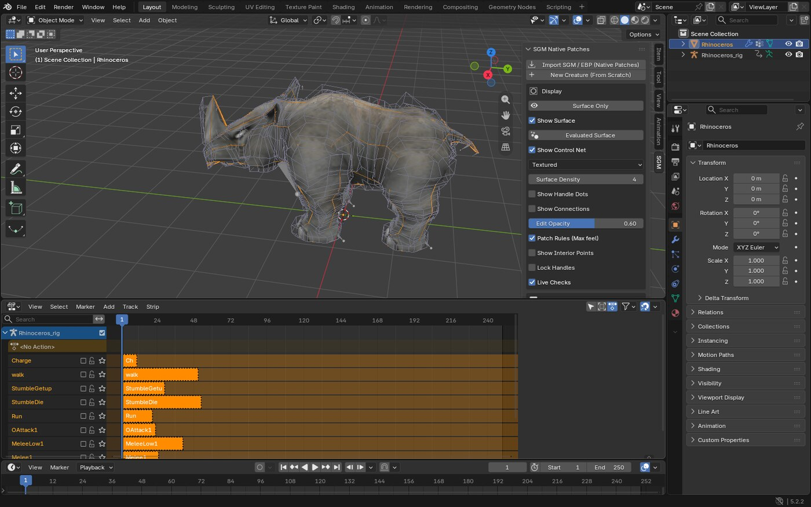
Change a clip
The Actions belong to the rig, so select it first.
- Press Select Rig. Select the creature again when you want to edit its shape.
- Open a Dope Sheet in Action Editor mode, or the Graph Editor.
- Enter Pose Mode (Ctrl+Tab), go to a frame, pose a bone and key it with I. Auto Keying works too.


Only clips whose keys or names you change are written again. The others come out as they were. If a clip you changed is a game name (Walk, Melee1 ...), the game plays your version. Nothing else needs doing.
Make a new clip and make it play
Say you want a slow walk for when the creature is hurt. You need a clip, and then a motion that plays it.
- Make the clip. Choose a clip to start from with Load Animation (for example walk). Open the IC Game tab and
the Motions panel (it starts closed). Press New Clip, type a name (1 to 32 letters, for example
slow_walk) and press OK. You should see a message “Made the clip 'slow_walk' (a copy of 'walk') and set it as the rig's active Action”. The clip belongs to the rig and is kept. - Change its keys in the Action Editor, as above. Keep the first and last pose the same so that it loops.
- Load the motions. In the Motions panel press Load Motions. You should see a list of the blueprint's motions, with the motions each one starts indented below it. (If the panel says the model has no motion list at all, press Make the Motion List. It builds the standard motions from your clips.)
- Add a motion that plays the new clip. Click the Walk motion in the list. Press Add Copy. In the window, set Clip
to
slow_walkand give it a Name. Leave Start it wherever the original starts ticked. Press OK. - Give it its own range. This step is the one people forget. The copy starts with the original's range, and where two motions start together, the one listed
first covers the other. So a copy listed after the original is never seen until its range is different. (The window for Add Copy also has a box List it before the original.
Tick it and the copy covers the original instead.) Under Plays only while, set
Variable to
Velocity(how fast the unit is moving, in game units per second; the game moves it by itself), and fill in Above and Up to: the lowest and highest speed at which this motion plays (-1 means no limit). Then click the original Walk motion and change its range so the two take turns and do not overlap. - Set the speed. Under Speed, Speed follows is the variable (
Velocity) and Clip made for is the value at which the clip plays at its own pace. At twice that value it plays twice as fast. See “Walk and run speeds” below to get this number. - Look at the box Check what you changed. It lists what the game would do differently from what you most likely want: a motion that plays a clip the rig does not have, two motions that start together, a gap in speeds where nothing plays, a loop. It shows only what your changes brought, not what the original blueprint already had.
- Export with Export Creature for the Game (or Export Entity Folder for a worker, a structure or a prop). The export tells you about any new clip that no motion plays.
Walk and run speeds
A walk cycle has to be told how fast the creature was walking when it was made, or the feet slide on the ground.
- In the Motions panel find the box Walk and run speeds and press Measure Walk and Run Speeds.
- For each walking or running clip (a motion whose speed follows Velocity) you see a line like “walk: 3.20 (now 3.00, from the feet on the ground)”. A clip with no foot on the ground says “no answer”.
- Press Use next to a line to put the measured number into Clip made for.
This is a good first guess. Look at the feet in the game and adjust. Motions that follow something else (an attack's time) are not measured and are never changed by it.
Borrow clips from another model
You can copy the animations of another model onto your rig as new clips.
- In the Motions panel press Borrow Clips.... (The panel needs a model with a skeleton.)
- Borrow from: choose a model of the game, or set Or a file to a model on disk. A creature borrows from other creatures. A worker, a character or a structure borrows from other models of those kinds.
- Only these clips: names separated by commas. Empty copies every clip you do not have yet. A clip you already have is skipped.
- New name: works only together with Only these clips. Type exactly one clip name there, and give it a name your rig does not have yet. This lets you borrow the other model's Walk next to your own Walk. (Otherwise the message says “A new name works for one clip: name that clip under 'Only these clips'”.)
- Press OK.
Bones are matched by name. A bone the other model has no bone for stays in its resting pose. Move distances are scaled to the size of your bones. The message says how many bones matched. If only a few do, the clips will hardly move, and the add-on warns you. A borrowed clip with a name the game knows (Idle1, Run ...) gets its motion from the game, only where your blueprint has no motion of that name. A borrowed clip with any other name needs a motion: use Add Copy as above.
Renaming, deleting and exporting clips
- Rename the Action, not the NLA track or strip, to rename the clip. The motions that played it follow.
- Delete a clip in the Outliner: Blender File > Actions > right-click > Delete. Unlinking the Action or deleting its NLA track does not drop an imported clip.
- A clip made with New Clip or Borrow Clips... is kept. Any other new Action is exported only while it is the rig's active Action or sits on one of its NLA tracks.
- The scene's Frame Rate (Output Properties) is the rate of a new clip. Load Animation sets it to the loaded clip's rate. Check that it is 30 before you export a clip you keyed yourself.
Reference
You do not need this part for the walk-through above. Come back to it when you want to know what a box does.
The Motions box in full
- Name and the clip it plays: the magnifier lists the rig's clips, the play button shows the clip on the rig so you can watch it in Blender.
- Loop: whether the clip repeats.
- Speed: Speed follows, Clip made for, Play speed and an invert button.
- Plays only while: Variable, Above and Up to. This is how Idle, Walk and Run take turns.
- More: fade in and out, strength, how much of the clips below shows through, start delay, pause between loops.
- Add Copy: a new motion like the selected one.
- Delete: removes the selected motion (the motions it started stay) and fixes the numbers of the others for you. If the game makes a motion like it by itself when the model loads, the message says it comes back. Change the motion instead of deleting it, or give the clip another name.
- The play button next to the list (Start With This): the motion the model starts with.
The changes are written when you export. Only the motions you changed are written again. If you change nothing, the blueprint is the original byte for byte, and the export says nothing about its motions. If you rename a clip in Blender, the motions that played it follow the new name. If the export says the blueprint's motions are not the ones the box loaded, the blueprint is another one now and your motion changes were not written. Press Load Motions to read it again (this drops your motion changes) and make them again.
Rules the game imposes
- A bone with no keys in a clip stays at rest under its parent.
- One Action is one clip. Mixing in the NLA editor is not exported. Mute the NLA tracks you do not want counted to silence the warning.
- Keys on a missing bone are left out, with a warning. For a creature, rename bones with Boner > Bones > Rename Bone, which updates the Actions. For a building, a worker or a prop there is no Boner panel: rename the bone in the Outliner (or press F2 in Edit Mode), as in Structures and props, “The skeleton”.
- Actions left over from an earlier rig are ignored, with a warning.
- Each clip stores two boxes (one for the whole clip, one for its last frame) that the game uses to decide when a unit is on screen. When a reshaped body changes the creature's size, the export recalculates the boxes of the clips it keeps as they are. The keys are not touched.
Structures and props
A structure is a building, such as the Lab, the Radio Shed or the Anti-Air Tower. A prop is scenery or a resource spot, such as a coal bin or a barrel. Both are made of parts: separate meshes that sit on the bones of a skeleton. In this chapter you change one of them, try it in the game, and learn what each tool does. Workers and story characters work the same way and have their own chapter, Gatherers and characters. You need the setup from Start here.
1. Start the project
The game cannot load a building built from nothing, so you always start from a copy of one of the game's own.
- Choose File > New > Impossible Creatures Project....
- Set Type to Structure / prop.
- Open Start from and choose a model, for example Lab (structures). The list is long and sorted by file name. Each
entry reads “Name (folder)”:
structuresare buildings andnatureis scenery, for example Coal Bin (nature). Type in the list's search box to find one. The last choice, Another .sgm file..., starts from a model file of your own. If the list shows only that choice, the add-on has not found your game: set the Game folder in the preferences. (These choices are in the panel at the right of the file window. If you do not see it, press the small gear button at the top right of the window.) - Animations: Keep its own or None. (Borrow works only for creatures. Borrowing clips later is in Animations and motions.)
- Go to an empty folder of your own. The file name starts as
NewCreature.sgm: replace it with a name of your own, not the game's name (notlab). Then press New Impossible Creatures Project at the bottom right. The model (.sgm) and its blueprint (.ebp) are copied there and opened.
You should see the building in the 3D Viewport, and the message “Started the structure / prop project ...”. If the message says the file is already there, choose another name. Nothing is overwritten.
2. What you see
- One mesh object for each part, at full detail, with the game's textures.
- An armature called
<name>_rig, if the model has a skeleton. Its bones are also vertex groups on the parts. A model with no skeleton (the Radio Shed) has no rig box and no Motions panel. The IC Blender panel then says “scene object: 3 part(s)”. - The animations, as Actions on the rig (Animations and motions).
- Attachment points, shown as small arrows in a collection called Markers.
- Damage states, as shape keys on the parts that have them.
- In the IC Model tab: the IC Blender panel (model information, the rig box, and Damage States), Parts, Markers and IC Material. In the IC Game tab: Blueprint, Motions, Effects and events and Game.
3. Change the shape
Select a part, press Tab and use any Blender mesh tool. These are written when you export:
- moved, added or deleted geometry, including extrude and subdivide;
- UVs, seams and flat shading;
- bone weights (a vertex with no weight goes to the root bone);
- faces moved to another material slot, a new one included;
- moving, turning or scaling a whole part in Object Mode. The part is written where it is, relative to the rig. Moving the rig alone moves every part. Move the rig and its parts together to keep the model as it was.
The limits are the game's. A part holds at most 12,288 vertices, counted after splitting at UV seams and hard edges, and 65,535 triangles. If the export refuses a part, reduce its detail (for example with a Decimate modifier, applied). Blender shading settings the game has no use for (roughness, extra nodes) are not saved. The export names them.
4. Parts: add, remove, replace
Open Parts in the IC Model tab (select a part first). It says how many parts the file has and how many are new. Press Tab to leave Edit Mode first: the buttons below work only in Object Mode, and are grey in Edit Mode. Each of them opens a small window with options. Press OK in it.
- Add a part. Make or import the mesh. Select it, then select the model's part last, so that it is active. Press Make Part of Scene Object. Follows bone makes the new part move with one bone (a fan blade, a door). Leave it on none and weight it yourself in Weight Paint: one vertex group at full weight follows that bone, several make it bend like a character, none keeps it still. Shows like makes it appear and disappear with another part in every animation (a build stage, a damage piece). Otherwise it shows in every animation. A mesh parented to the rig, or to the model's empty, counts as a new part too. To undo, select it and press Leave Out. Give the new part its picture before you press Make Part: a new part has no IC Material panel. Give the mesh a normal Blender material with an Image Texture (Material properties). The export turns it into a game shader (and warns “new shader(s): ...”). To repaint it later, use Blender's Texture Paint. A mesh with no material gets the model's own materials.
- Remove a part. Delete its object, and tick Remove parts deleted in Blender when you export. Without the tick, a deleted part keeps its original shape.
- Replace a part. Select your mesh, then the part last. Press Replace Part With Selected Mesh. The part keeps its name, its place in the model and its bone. Your mesh is used up (tick Keep the selected mesh to keep it). Bone weights are copied from the old mesh to yours. Materials chooses whether the new faces take the part's materials or keep your own.
- Replace the whole model. Select your mesh, then any part. Press Use This Mesh as the Model. The mesh is scaled to fit inside the model's size and put where the model stood. It becomes the largest part. The other parts are removed when you export, so moving parts (fan blades, doors) are gone. Turn your mesh to face the way the model faces first.
Rules: a new part's name must differ from every part's, ignoring capital letters. It follows only bones the model has, or bones you add. A model with a single mesh is turned into a group of parts when you export, so that it can hold more. A cut-scene model that is one skinned mesh cannot get parts, and neither can parts stored as separate blocks (projectiles and effect models). The mesh you use is taken as you see it, with its modifiers applied.
5. Textures and materials
Select a part of the original model (not a part you added: see step 4) and open IC Material (IC Model tab). It shows the material of the active slot: its game shader, its texture and its size.
- Repaint a texture. Paint on the part's image in Texture Paint, or in the Image Editor. When you export, the changed texture is written as a new texture file, and only that material changes in the model.
- Use another picture. Press Replace Image and choose a picture. If its sides are not powers of two (2, 4, 8 ... 1024), it is scaled to the nearest size the game takes. Untick “Scale to a size the game takes” (in the options of the file window, at the right) to be told instead. The game takes only sizes up to 1024.
- Add a material. Press New IC Material. It gets a plain 256 by 256 texture to paint or replace. In Edit Mode the selected faces get it at once. Otherwise select faces and press Assign in Blender's Material properties. The export takes the game settings from the model's first shader, but none of its textures, so the new material shows only its own texture.
- Opacity. The Opacity slider sets how solid the game draws the material (1 is solid). Cut-outs in the texture stay as they are. Glowing effects that add their colour may look different.
- Team colour. Tick Team colour, then press Team Mask. You get a mask image to paint: white where the player colour goes, black elsewhere. A material that already has team colour starts from the game's own mask. You paint the team area in player 1's green, and the export makes the other colours. The buttons 1 to 6 under Preview show a player's colours in Blender only. Press 1 to go back.
- A copy of a material gets its own new shader at export. The original keeps its own.
Where the files go: Export Entity Folder writes new textures into data/art/textures in the export folder. The game shares texture names between all models, so a changed texture
always gets a new name made from your model and the material, in lower case (the player-colour copies add _tc01 to _tc06). A game texture is never overwritten. If nothing changed, the model is
written byte for byte as it was, with no texture files.
Not used by the game: two-sided materials, specular and reflection settings (they are kept from the original and cannot be edited), and Blender's roughness and metallic. The team colours the add-on makes can differ slightly from those of the game's own textures. Check them in the game.
6. The skeleton
Select the rig and press Tab for Edit Mode. You can:
- rename a bone (double-click its name in the Outliner, or F2);
- move or turn a bone (G, R);
- add a bone (Shift+A), parent it (select the new bone, then Shift-click its parent last, press Ctrl+P and choose Keep Offset) and give it weights in Weight Paint;
- re-parent a bone the same way;
- delete a bone with Armature > Delete Bones, Merge Weights. It hands the bone's weights to its parent first, so the model looks in Blender the way the game will show it. A plain delete (X) leaves the weights on a bone that no longer exists. If some vertices or a part then follow no bone, the export refuses and says which bone to merge.
What follows automatically: clips you did not edit keep playing as they did. Attachment points on a renamed bone keep pointing at it. A part follows the bone of its vertex group. To re-bind it to another bone, go to Edit Mode and select the part's vertices, choose that bone's group under Object Data Properties > Vertex Groups, then press Ctrl+G and choose Assign to Active Group. Export Entity Folder also updates the blueprint, so effects and sounds placed at a renamed bone follow the new name. The export report lists what happened to the skeleton.
What is refused: two bones with the same name ignoring capital letters, a name longer than 79 characters, deleting or parenting the first bone, and more than 255 bones weighted on one part. The game looks up a few bone
names itself (Bip01 Head, nose, and the tail, neck and spine names). Blender shows bone names in lower case (bip01 head), and the game does not
tell capital and small letters apart, so keep the name as Blender shows it. Renaming or deleting those is only warned about.
7. Attachment points (markers)
A marker is a named point on the model: the tip of a worker's hand, a chimney on a lab, the muzzle of a gun. The game puts an animation's effect and sound at the marker the blueprint names. If the game asks for a marker the model does not have, nothing crashes and nothing warns. The effect plays at the model's feet.
Open Markers in the IC Model tab (select any part, the rig or a marker).
- The list shows each marker, the bone it is on (or “model space”) and how many events use it. Click a name to select that marker.
- Move or turn a marker with G and R. Scaling works, but the game then scales the effect too, and the panel warns you.
- Add puts a new marker at the 3D cursor. With the rig in Pose Mode it goes on the active bone. Otherwise it sits in model space. It gets a free name like Point01. Rename it at once to something that is not a bone's name: in the Lab, Point01 is also a bone, and the check then warns that events naming it find the marker, not the bone.
- Delete removes the selected markers. The panel tells you if events still use them.
- Rename: at most 126 letters, plain Latin letters, not starting with the digit 0, and not the name of another marker (the game does not tell capital and small letters apart). The game never finds a marker whose name starts with 0: the list shows “not found” next to those.
- Bone moves the marker onto another bone, or to “None (model space)”, without moving it.
- Events lists the events that place something at the marker. The list is in the Info editor.
- A box with a warning sign lists names the blueprint uses that the model does not have. On an untouched model it may list a few (the henchmen list
head). That is the original's own state: leave it.
Markers you did not touch come out as they were. Export Entity Folder also renames a marker in the blueprint's events, so they keep finding it, and tells you about any event that now names something the model no longer has.
8. Damage states
Some buildings carry shapes the game blends in as they are damaged: the Lab's tent sagging and collapsing, the coal bin caving in. The add-on calls them damage states.
- A part with damage states has shape keys: a
Basiskey and one key for each stored shape. Each key is named after a clip that uses it, for example06 damage_03. All keys start at 0, so the model looks undamaged. The clips that blend them are Actions on the part's shape keys, on muted NLA tracks. - Open Damage States (a part of the IC Blender panel, in the IC Model tab, with a part selected). It shows how many damage states and clips the part has.
Not every part has them. In the Lab, select the part
Lab_tent(the tent): it has 11. The part that is selected when the project opens (Lab_Engine) says “no damage states on this part”. - Preview health: drag it between 0 and 1. 1.000 is undamaged. Lower it and the panel says which damage clip the game plays at that health (“plays: damage_02”), the part's shape keys take that clip's values, and parts the clip hides are hidden. Set it back to 1.000 to undo the preview. The preview never reaches the export. It does not show the bone movements of the damage clips, or the game's lighting.
- Change a shape: select the key in Object Data Properties > Shape Keys, go to Edit Mode and move vertices, or sculpt it.
- Edit the mesh as usual. Blender carries the shape keys along, and the export writes every shape over the new vertices.
- Delete a shape by deleting its shape key. The clips that used it lose that part of their animation, and the later shapes are renumbered.
- Add Damage Level (in Object Mode) adds a shape key and a new clip
damage_NNthat shows it at full strength, as the most damaged level. Shape the key, then export with Export Entity Folder. Adding a level moves the others: the levels are spread evenly over the damage. Four levels show from 25, 50, 75 and 99.99 percent damage. Five show from 20, 40, 60, 80 and 99.99 percent. The newest level shows only when the building is all but destroyed. - Carry Over Damage States: for a part whose mesh you replaced and that has no shape keys any more, this builds them again from the original file, matching each new vertex to the nearest point of the old surface. Vertices too far away do not move and are selected so you can see them.
A part with damage states is always written with a single level of detail (it does not get simpler at a distance). Check damaged buildings in the game. The export option Leave damage states out of edited parts writes edited parts without damage states.
9. Check, export, install
- Open the IC Game tab and the Game panel. In 1. Check press Check. It tests what the export would write, against the game's rules, and writes nothing. It also says if the model's file was changed on disk after you opened it. A project started from one of the game's things also has Check as replacing ....
- In 2. Export for the Game press Export Entity Folder. A file window opens. Go to the folder where the export folder should be made (not the game's own folder, and not inside Steam's).
- The options are in the panel at the right of the file window. (If you do not see it, press the small gear button at the top right.) Choose Export as:
- A new name of my own: set File name (it starts as
NewCreature.sgm: replace it) and Folder in the game. Use a name the game does not have (notlab): if the name is the game's own, the files take the place of the original even under this choice. The game shows a thing with a name of its own only where a map or a script asks for it by that name. With a name of your own, nothing in the game changes by itself. - Replace the original ... (shown with its name, when the project started from one of the game's things): the files take the place of the game's own. Everything that uses it (maps, the build menu, the computer players) gets your version. In a game with other players, every player needs the same files, because the kind, the footprint, the offset and the size of the model are compared when a game starts.
- A new name of my own: set File name (it starts as
- Also in the options: Leave damage states out of edited parts, Remove parts deleted in Blender and Export anyway (writes the files even if the check found errors; the game may refuse them).
- Press Export Entity Folder in the file window.
You should see “Wrote the item ...” with the number of files, how many parts were rebuilt and how many were kept as they were. The export folder has a lower-case data folder (the model and the blueprint in
data/art/ebps/<folder>/, new textures in data/art/textures) and a README beside it.
If the export says “it is this model's own blueprint ... Export under another name” (see Troubleshooting), choose a different folder and a different name. That happens when a change such as a renamed bone, a new part or a changed texture would be applied a second time.
- In 3. Install into Test Game, press Install into Test Game (see Check, export, install, remove and share). Start the game from the test copy.
Seeing a thing with a new name
A thing with a name of its own appears only where a map places it. To see it:
- Set the add-on's Game folder (preferences) to your test copy, so the add-on sees the files you installed.
- Open one of the game's maps (File > Import > Impossible Creatures Map from the Game...). In the IC Map tab use Map > Placed objects > Add object at the 3D cursor....
- Save with Map > Save > Save ready-to-drop folder... and copy that folder into your test copy.
Or export again with Replace the original ..., and the game's own thing looks like your model everywhere.
Gatherers and characters
A gatherer is a worker, such as the henchmen who collect coal. A character is a person of the story, such as Rex. Their models are one skinned body on a skeleton, and it bends when they move. A building, by contrast, is made of rigid parts (Structures and props). Almost everything works the same way for both. This chapter shows the walk-through for a worker and points to the structures chapter for the tools they share.
1. Start the project
- Choose File > New > Impossible Creatures Project.... A file window opens. The choices are in the panel at the right of it. (If you do not see it, press the small gear button at the top right of the window.)
- Set Type to Gatherer / character.
- Open Start from and choose Henchmen. (The list holds the game's workers and characters. Another .sgm file... starts from a model file of your own.)
- Keep Animations on Keep its own. A worker with no animations does not walk or work.
- Go to an empty folder of your own. The file name starts as
NewCreature.sgm: replace it with a name of your own, not the game's name (nothenchmen). Then press New Impossible Creatures Project at the bottom right.
You should see the worker and its skeleton, and the message “Started the gatherer / character project ...”. In your folder are the model (.sgm) and the blueprint
(.ebp).
2. Change it
- The shape. Select the body and press Tab. Use any mesh tool. Weights decide which bone moves which vertex. Fix them in Weight Paint. A vertex with no weight goes to the root bone, which usually looks wrong, so check the places you changed.
- A new look for the whole body. Press Tab to leave Edit Mode first: these buttons work only in Object Mode. Select your own mesh, then the worker's body. In the Parts panel press Replace Part With Selected Mesh, or press Use This Mesh as the Model. Leave Copy the part's bone weights (or Copy the model's bone weights) ticked, so that your mesh bends with the skeleton. Each button opens a small window: press OK.
- The skin. IC Material: repaint, replace the image, change opacity or team colour. See Structures and props, “Textures and materials”.
- The skeleton. Rename, move, add, re-parent and delete bones as in “The skeleton” of that chapter. The game looks up the head bone by its name, which Blender shows as
bip01 head(the game does not tell capital and small letters apart), so keep that name. - Attachment points. Markers are the points where things attach. On the henchmen,
Point_Ris the right hand,Rays_heal(where the heal effect appears) is on the right hand, andPoint_Coalbasket(the basket they carry) is on the neck bone. Move them in the Markers panel (Structures and props, “Attachment points”). On an untouched henchman the panel listsheadas a name the blueprint uses that the model lacks. That is the original's own state: leave it. - Numbers: Gameplay numbers. Animations: Animations and motions. Effects and sounds: Effects, events and sounds.
3. Check, export, install
- Open the IC Game tab and the Game panel. In 1. Check press Check.
- In 2. Export for the Game press Export Entity Folder. Choose a folder, and then Export as (in the panel at the right of the file window). Choose Replace the original ... to change the game's
own worker, or A new name of my own for a worker that appears only where a map or script places it. For a new name, type a file name that is not the game's
(not
henchmen): with the game's own name, the files take the place of the original even under this choice. - In 3. Install into Test Game press Install into Test Game. Start the game from the test copy (Start here, “Start the game”).
After changing a worker, check in the game that it still walks, gathers and carries correctly.
Replacing the henchmen changes every henchman in every army of that copy. In a game with other players, everyone needs the same files.
The step-by-step details of the export window, the new-name and replace choices, and what the files hold are in the chapter Structures and props, section “Check, export, install”. The refusal messages are in Troubleshooting.
Effects, events and sounds
Smoke, sparks, beams and the sounds that go with them are not part of a model. The game keeps each effect in its own file. An event starts it. An event says: “when this animation reaches this moment, start this effect and play this sound, at this point of the model”. The game runs it by itself while the thing animates. A bite with a spark, a footstep with a puff of dust and the glow at a worker's hand when he heals are all events.
This chapter shows how to change an effect, hook it to an animation, add your own sound, and see the result in the game. It works for creatures, workers, characters, structures and props. It also covers a thing the game throws or fires (a projectile) and the small mesh an effect draws (an effect model). You need the setup from Start here.
Words used here
- Blueprint: the file that tells the game how the model behaves: its animations, sounds, effects and numbers.
- Clip: one animation of the model (a walk, a bite).
- Marker: a named point on the model where an effect or sound happens (a hand, a muzzle).
- Key frame: one stage of an effect's life (its start, its middle, its end).
- Item: the folder the export makes. It holds the files the game reads.
- Projectile: something the game throws or fires. Effect model: a small mesh an effect draws.
- Mono: a sound with one channel. 16 bit: a common sound quality. A sound that comes “from a place in the world” must be mono.
Try this first
- Start a project and select it (see step 1 below). Open IC Game > Effects and events and press Load events in Events.
- Press Copy a game effect, search for
blue sparks_ringand choose it. It is copied into your project withmy_in front of its name (the new name is shown in the list Effects used). - Choose an event in the list. In its Effect box, type the new name (or search for it with the magnifier: your own effects come first).
- Export, install and play (Check, export, install, remove and share).
1. Open the Effects and events panel
- Start a project for the thing (a creature: A new creature from a game animal; a worker, structure or prop: Gatherers and characters, Structures and props). Select it.
- Open the IC Game tab and the panel Effects and events (it starts closed; click its header). It has the parts Events, Sounds, Effects used, Effect editor and Effect preview.
If you do not see Effects and events, click the model's mesh or skeleton in the 3D Viewport. The panel is hidden when nothing is selected, or when the selected object is a marker or a camera. For an Effect model project only Effects used and Effect editor show.
An effect on its own has no animation to hook to. For a projectile or an effect model, start the project with Type set to Projectile or Effect model (see the end of this chapter).
2. Look at the events
- Open Events and press Load events. A creature that you started from a game animal shows that animal's events. A creature you started from Default skeleton starts with the cheetah's events for the clips it has.
- Choose a clip in Clip to see only its events.
- Add makes an event for that clip at the playhead. Choose the clip first: if you do not, Add uses the model's first clip. The new event is called
NewEvent; rename it in Name. A model with no clip needs a clip name typed in the Clip box first, because an event runs only while the clip of its name plays. Copy and Delete do what they say. - Choose an event and fill in its box:
- Name: a label.
- Clip: the animation it belongs to.
- Time: how far into the clip the event happens, from 0 to just under 1. 0 is the first frame and 0.5 is halfway. An event at 1 never runs, so the panel does not offer it. The clock button sets the time from the playhead. Do not press the rewind button on an event that plays a sound: it makes the event run when the clip starts, and a sound on such an event loops.
- Marker: where on the model it happens. Type the marker's name, or press the magnifier and choose it from the list of the model's markers and bones. (The small axes button does not work.)
- Effect and Sound: the magnifier searches the game's effects and sound files. Your own effects and sounds come first.
- Fields the box has no row for stay under Other fields, as they are. Add field... adds one.
An event with no clip never runs. The box shows a red note, and the export lists it.
The edits are written into the blueprint when you export: Export Creature for the Game for a creature, Export Entity Folder for anything else. Only the events you changed are different in the file. If you never opened the box, the thing exports exactly as before.
Copy events from another animal
To use another animal's events instead of the ones you started with, press Copy events from another animal, choose a game animal, and its events are copied for the clips your creature has. An event of a clip you do not have could never run, so it is left out. Edit them afterwards as you like.
3. Copy an effect and change it
A game effect cannot be edited in place. You copy it into your project first.
- Open Effects used. It lists the effects your events name and the effects those start. Each is marked project (your copy), game (the game's own) or missing. A game effect can be looked at in the editor, but only copied until it is yours: press Copy to my project in Effect editor, or Copy a game effect above.
- Press Copy a game effect and search for one, or press the copy button next to a game effect in the list. The copy brings the effect, the effects it starts, and their pictures and meshes into your project's
folder
<your project>_fx/data. That is a folder named after your project's.sgmfile, with_fxadded, next to it (for examplemy_lab_fx/data). The first grey line of the panel shows the path. - Look at Name prefix (
my_unless you change it). It goes in front of every copied name, so the game's own effects stay as they are. If you empty it, the copies keep the game's names and replace the game's effects. - Give an event your copy's name in its Effect box. The game plays your copy only where an event names it.
New makes an effect of a type (spray, ring, beam, trail, combo or conditional) at the game's own defaults, or from a game effect of the same type.
A game effect whose name has a space (for example “blue sparks_ring”) is copied with an underscore instead, because an item cannot hold a file name with a space. The effects that start it follow. A name you type for a new effect gets the same change.
Two special kinds: a combo effect starts all the effects it names at once. When the first of them has ended, the game stops the others: a spray stops making particles, a looping effect or a trail ends. A ring or a beam that does not loop plays out. A conditional effect also starts both of its effects, so edit it as a pair of effects.
4. Retune it: the Effect editor
- Press the pencil next to an effect. It opens in Effect editor.
- Change the rows. Every property has the control of its kind: a number (with the range the game accepts in the label), a tick box, a colour, a picture or mesh (type its name, or press the folder button to copy a file from your disk into the project; the small cube button beside Mesh uses your own model), the blend mode, or the name of another effect (type it, or press the magnifier to choose).
- Each change is written to the effect's file at once. A value the game would silently ignore (out of range, wrong count) is refused, and the reason is shown.
- The x next to a row takes the property out of the file, so the game uses its default.
Spray, ring and beam effects change over their life. Key frame chooses which key the rows show. Add inserts one between its neighbours, Remove deletes one and Move changes its
time (0 is the start of the effect, 1 its end; the first and last keys stay). Duplicate under a new name copies the effect shown. Write effect files to a folder writes the project's effect files, pictures, meshes and sounds into
<your folder>/data/, without the model.
The pictures inside a game's 3D effect mesh stay the game's own. You cannot change them here.
5. Your own sound from a WAV file
- Open Sounds (it starts closed; click its header) and press New Sound From WAV. A file window opens. Pick a
.wavfile. - Set the options in the panel at the right of the file window (open it with the small arrow, or press T):
- Sound name: letters, digits and underscores, up to 32. Empty uses the file's name.
- Volume: 1 plays the wave as it is. It plays at exactly this volume and at the wave's own pitch every time. (The game's own animal sounds vary a little. Yours does not.)
- Has a place in the world: the sound comes from where the thing is and gets quieter with distance. Use a mono wave for this. Then set Full volume up to and Not heard beyond. The far distance must be larger than the near one.
- Use it in the chosen event: puts the sound into the event you have chosen.
- Press the blue New Sound From WAV button. The add-on makes the three small files the game needs (a sound, a sample and the wave) in your project's folder.
Your sounds are listed in Sounds with Use (puts it into the chosen event) and a bin button (delete it). In an event's Sound search they come first.
Save your sound as a WAV file, 16 bit, plain PCM, mono. The game also reads three kinds of ADPCM. Floating-point WAV files and “extensible” WAV files (many 24 bit files are) are refused, and the message tells you to save the sound again as plain 16 bit. A plain 24 bit file only gets a warning.
Give the event a time. An event that plays a sound plays it once only when the event has a time (0 up to just below 1). With no time the game starts it as a looping sound that stays until the clip is over. The Events box and the export tell you when an event of yours has a sound and no time.
- When you export, the sound goes into the item with the event. For a creature the sound lives in a folder of the creature's own name. If you export under another name, the add-on moves it and the events follow.
A worker, a character, a structure or a prop keeps its sounds in
audio/sfx/<its name>inside the item. - For a creature, two sounds with the same name in two folders cannot both go into one item, because they would land on one file. The export stops and says so. Delete one, or make it again under another name.
- The bin button asks first, deletes the sound's files (a file another of your sounds still uses stays) and cannot be undone.
- Blender's Undo does not undo a file written into your project (an effect or a sound).
6. See the effect in Blender: the preview and its limits
- Open Effect preview. Choose a clip in the Events box.
- Press Show the clip's effects, then press Play on the timeline. Every event of that clip that starts an effect shows it at its marker, at the moment the event gives. Show this event's effect does the same for the event chosen in the list. Remove takes the preview away.
The pictures are kept in a collection named after your model and are never exported. The effect follows the marker (or bone) while the animation moves it. It faces the scene camera, or your 3D view when there is no camera.
It is a preview, not the game's own picture:
- Particles that use a 3D mesh show as flat pictures. A spray has no ground or wind. A trail follows the marker's own path.
- An effect that lasts for ever is shown for a couple of seconds, or until the other effects of its combo have ended.
- An effect the preview cannot draw is left out, with a message. The game plays it as usual.
- If the effects run past the end of your timeline, the message says up to which frame.
- It does not show other event fields, such as a second marker an effect uses.
7. Check, export, install
- In the Game panel, 1. Check: for a structure, a worker, a character or a prop, Check lists an effect the game would not load as an error. For a creature, Check the Creature does not test your effects. The export does. A project of the type Effect model also shows one note: “This effect installs as loose files ... The Steam Workshop does not take effect items yet, so it cannot be shared there”. It does not mean anything is wrong with your effect.
- Export (Export Creature for the Game or Export Entity Folder). It writes the model, the blueprint with your events and the project's effect files in one go. It stops, before writing anything, if an effect is one the game would not load at all. The message names the file and why.
- Press Install into Test Game. The effect files install as loose files, and the game reads them.
Projectiles and effect models
File > New > Impossible Creatures Project... has two types for this chapter:
- Projectile: something the game throws or fires (a rock, a quill, a spit). It is a small model with a blueprint, started from one of the game's projectiles, and exported like any other thing with Export Entity Folder.
- Effect model: a small mesh that an effect draws instead of a flat picture (a chunk, a shard, a ring). It has no blueprint and no events. Export Entity Folder writes an item
folder named after the model, with the model in
data/art/fx/, the project's effect files and a list of files. An effect names the model in its Mesh box. Use my model beside Mesh points a ring at your own model.
Check, export, install, remove and share
Every kind of work ends the same way: in the Game panel of the IC Game tab. This chapter goes through its four boxes, in the order you use them. You need a test copy of the game (Start here).
1. Check
Check looks for what would stop the game loading your work. It writes nothing.
- A creature: press Check the Creature. It runs the model checks and also what Export Creature for the Game would refuse: the numbers, the motions and the events. A creature that passes Check is one the export accepts. A creature that replaces a game animal is checked as that replacement.
- A structure, a prop, a worker, a character or an effect: press Check. It tests what Export Entity Folder would write: the model against the game's loading rules, the blueprint against its rules, and the files as the Steam Workshop would see them. It also says if the model's file was changed on disk after you opened it. A project started from one of the game's things also has Check as replacing ....
The box then says “No problems” or lists the problems. Errors (red) mean the game would refuse or mis-load the files. Warnings are advice. For a creature the box shows the first three problems, and the Info editor lists them all. After you change something, press Check again: the box shows the result of the last Check.
2. Export for the Game
Export writes a folder called an item. It holds the files the game reads, all with lower-case names, inside a folder called data.
- A creature: Export Creature for the Game. A window asks for a name, a display name, a description and a picture (see A new creature from a game animal and
Replace one of the game's animals). The item is a folder named after the creature, beside your model (or in the Folder you choose), under
ic_items. It holds the blueprint with your model inside it, the numbers, the limb scales, the creature creator's picture and a list of the files. - Anything else: Export Entity Folder. A file window asks where to make the folder. It writes the model, the blueprint, new textures, your effects and sounds, a list of files and a README.
Export refuses a game folder or a folder inside Steam's, so it cannot damage your game. It also refuses to write into a folder that holds somebody's other files. It replaces only an earlier export of the same item. If export refuses, the message says why. See Troubleshooting.
After a good export the box shows Last export with the item's name. The item is also the folder the next step uses.
3. Install into Test Game
- Look at the box 3. Install into Test Game. Near the top of the box it shows your test copy's folder, and either “A copy of the game made here on ...” (a copy this add-on made) or “A folder you set yourself”. If it shows a red message instead, fix that first: set Test game folder in Edit > Preferences > Add-ons > IC Blender, or press Create Test Game Copy (see Start here).
- The line Installs: ... shows which item it will use: the one from your last export. To use another, set Item folder to an item folder (a folder with a
datafolder in it). The line Last export shows when the item was last written. - Press Install into Test Game.
Under box 3 is a separate box, Installed here. It lists what you have installed in the test copy. A fresh copy of the Steam game may also say, for example, “7 more installed by other tools (not touched here)”. Those are Steam Workshop items that are already in the game. Leave them.
First the add-on checks the item the way the game's own rules would. If it finds something the game would refuse, nothing is installed, and the box (red) lists the reasons in plain words, with a button Install Anyway that installs it as it is. The item may not work. Other findings are only advice. They appear as yellow lines that start with “Advice:” after the install message (for example “the Steam Workshop would not take this for sharing”). The game still loads those files, so they do not stop the install. Only the red box with Install Anyway is a refusal.
Then it copies the item's files into the copy's Data folder. Loose files there come before the files in the game's archives, so the game uses yours. It also:
- keeps every file it replaces, so that Remove can put it back, byte for byte;
- writes an uninstall list in the game folder (
<item>.lst) and its own undo data in a folder calledICBlenderthere. Leave both alone; - deletes the game's saved picture of every model you replaced, so the game draws your new model (“N saved model(s) of the game cleared”);
- for a creature with a new name, adds the name to the creature creator's list of every mod in the copy (see A new creature from a game animal).
You should see “Installed '<name>' into <folder>: N files. Start the game from that folder ...”. If files were replaced, or saved models cleared, or a creature added to the creature creator, those facts come in the same sentence after the number of files. The list Installed here now shows the item. Items installed by other tools are counted but never touched.
Notes the message may add:
- “N file(s) of this item are also in the folder of the mod ... The game keeps loading that copy there, not the new file.” A file in a game mod's own folder, or in a folder called
DataMODin the game folder, comes before a loose file inData. Play without that mod, or remove that file from the copy.
Ignore anything about DataMOD unless the install message mentions it. If it does, play without the mod that message names.
4. See it in the game
- If the game is running, close it. It reads an object's files when it loads it.
- Start the game from the test copy: run
IC.exein that folder. On Linux that needs Wine or Proton, and the Steam version starts only while Steam is running. Start here has the details, under “Start the game”. - Look for your work. The Next: line in the Game panel tells you what to look for when the item has a name of its own (a structure, a prop, a worker with a new name shows only where a map names it).
- If something is missing or wrong, read
warnings.login the test copy's folder.
5. Remove it
- In the list Installed here, press Remove next to the item.
- A window asks “Remove '<name>' from the Test game?” Confirm.
The message says, for example, “Removed 'wolf': 5 files deleted, 0 put back as they were”. “0 put back” is right when you replaced one of the game's own things. The game's original lives inside its archive and shows again as soon as your files are gone. “Put back” counts only loose files that were in the copy before the install.
Every file the install wrote is deleted, and every file it replaced is put back as it was. The creature lists go back to what they were, or are deleted with the folders the install made, if the mod had none. Folders that were
there before, or that hold something else, stay. If you edited a creature list by hand after installing, Remove leaves it and keeps the original in ICBlender/kept/roster/. A file you changed by hand after the install is
also left alone, with its original kept in ICBlender/kept/<item>/. If a mod's folder was deleted after the install, Remove still works and says the folder is gone.
6. Share your work: Pack for Sharing
- Export, as above.
- In the box 4. Share, press Pack for Sharing. A file window opens. It proposes the item's name with
.zip, beside the item's folder. When you pack again after a fix, choose the same name: an existing name shows in red, and the new zip replaces the old one. The add-on replaces only a zip file. It refuses to overwrite any other kind of file. - If the check found problems, the zip is not written. Tick Pack anyway in the options of the file window to pack it as it is. The options are in the panel at the right of the window. (If you do not see it, press the small gear button at the top right.)
- Press the confirm button. You should see “Packed N files into ... Send that zip file to other players”.
Unzipping gives one folder named after the item. Inside it:
- README.txt: what the item is, how to install it with and without the add-on, what it replaces, and the list of files;
- data: the files the game reads, all in lower case. The game's archives are case sensitive, and every path the game asks for is lower case;
- for a creature with a new name only, retail_roster: a creature list for each mod you have, for players who do not use the add-on. See below.
7. Install something someone else made
- Make a test copy if you have none.
- In the box 4. Share press Install From Zip and choose the zip. Or press Install From Folder and choose a folder that has a
datafolder in it. A folder you unzipped from a shared zip works too: choose the folder that holdsREADME.txtanddata. Its README and itsretail_rosterfolder are left alone.
The add-on accepts only files inside data, makes names lower case, and refuses anything that tries to write outside its folder, a shortcut, a locked (password) zip and a zip that is far too big. Then
it runs the same check as for your own work. If the check refuses it, nothing is installed, and the Share box says “The check refused ...” and lists why, with an Install Anyway button that reads the same zip
again and installs it as it is. It may not work. The add-on keeps no copy of a refused item. Remove takes an installed item out.
Players who do not use the add-on
The game finds a new creature's files by their place. But its creature creator shows only an animal whose name is on a list it reads when it starts. With the add-on, installing adds the name for you. For a player without the add-on, the
zip's retail_roster folder has one list for each mod you have, made from that mod's own list plus the new creature. So a mod that hides animals on purpose keeps hiding them. The README in the zip says how to copy a list
into place, and the one line to add if the mod's folder already has a list.
Players can install without the add-on like this: close the game, copy the whole game folder somewhere else (not the Steam folder), unzip the file, copy the files of its data folder into the game's
Data folder (the folder that holds IC.exe also holds Data), and merge when asked. On Linux the game's folder is called Data with a capital D. A file
manager does not merge a folder called data into Data for you: copy the files inside data instead, or you end up with a second folder the game never reads. Then start the game from there. To undo it, delete the files listed in the README.
Windows
Windows support is experimental. If something does not work on Windows, the message tells you what the add-on tried. Please report it.
Troubleshooting
When something does not work, read the message first. Blender shows the last message at the bottom of the window. The Info editor keeps all of them. To open it, click the editor-type button at the top left of any area and choose Info. (The Scripting tab at the top of Blender has one already.) The add-on's messages say what is wrong in plain words, and most say what to do. This chapter lists the ones you are most likely to meet, in the add-on's own words, and what to do. A word in angle brackets, such as <folder>, stands for the name in your message. A dots mark (...) means more text that depends on your case.
Most likely fixes
- A button is grey. Hold the mouse over it. Blender says why. Usually you must select the creature or thing first, leave Edit Mode (press Tab), or choose an event in the list.
- The add-on says it has not found the game. In Edit > Preferences > Add-ons > IC Blender, set Game folder to the folder that holds
IC.exe. - You have no test copy. Make one: IC Game tab > Game panel > Create Test Game Copy.
- The game still shows the old thing. Close the game and start it from the test copy, not from Steam (see “The game shows nothing, or the old thing” below).
- You cannot find a message. Open the Info editor (see above).
If your message is not here, search this page (Ctrl+F) for the first few words. If it is still not there, send the whole message with your report (see the last section).
Messages in red in a panel, or that start with Error, stop something. Messages that start with Warning, or that are in a grey line, are advice. You can go on.
The add-on does not show up or cannot find the game
| What you see | What to do |
|---|---|
No game found. Set the Game folder above, or set the IC_INSTALL environment variable. | In Edit > Preferences > Add-ons > IC Blender, set Game folder to the folder that holds IC.exe. Ignore the part about IC_INSTALL. |
No game folder found: set the Game folder in the add-on's preferences (Edit > Preferences > Add-ons, IC Blender), or set the IC_INSTALL environment variable. | The same. Until the game is found, the list Start from in the New Project window shows only Default skeleton (for a creature) or Another .sgm file... (for the other types). |
Add-on parts that failed to load (a red box in the preferences) | A part of the add-on did not start. The box says which part and why. Restart Blender. If it stays, install the zip again, and send the text of the box with your report. |
This was made with an older version of IC Blender. Import the original file again. | The .blend was saved with an add-on older than 0.9.2, which kept models flipped left to right. Open the model again with File > Import, or start the project again. |
The model file <name> was changed on disk after it was opened here ... Import <name> again to carry on from the file as it is now. | Another program, or an export from another Blender session, changed the project's file. Import it again with File > Import. In the creature panels the box Problems offers Relink Source for a file that moved. |
Making the test copy
These come from Create Test Game Copy. The window shows the first one before you press Create Copy.
| What you see | What to do |
|---|---|
<folder> is inside a Steam library. Steam owns that folder: it rewrites it and would wipe the copy. Choose a folder somewhere else (your Documents, for example). | Choose a folder outside every Steam library. |
That is the game folder itself. Choose a new folder for the copy. / <folder> is inside the game folder it would copy. Choose a folder outside the game. / <folder> holds the game folder it would copy. Choose a new, empty folder. | The copy must be a new folder of its own, not the game folder, not inside it and not around it. |
<folder> already has files in it. Choose a new or an empty folder: the copy must not mix with other files. | Choose a new or empty folder. |
<folder> already is a test copy of the game. Set it as the Test game folder instead of making another (or delete the folder first to start again). | Set that folder as Test game folder in the preferences, or delete it and make the copy again. |
<folder> is not a game folder (it has no Engine.sga). / The game folder does not exist. Set the Game folder in the add-on's preferences. | The Game folder is wrong. It must be the folder that holds IC.exe and Engine.sga. |
A test copy is already being made. Wait for it, or press Cancel. | Wait for the percentage in the Game panel to finish, or press Cancel. |
This copy was not finished (the copy was interrupted). Delete the folder and press Create Test Game Copy again. | Do what it says. |
The window shows the free space in red | There is not enough room. Choose another disk, or free some space. A copy with links is about half a gigabyte, a full copy about 5 GB. |
Installing and removing
These come from the Game panel, box 3. Install into Test Game.
| What you see | What to do |
|---|---|
No Test game folder is set. Make a copy of the game and set it in the add-on's preferences (Test game folder). | Press Create Test Game Copy. It sets the folder for you. |
The Test game folder <folder> does not exist. Fix it in the add-on's preferences. | The folder was moved or deleted. Set it again, or make a new copy. |
<folder> is the Game folder of the add-on, the original game. Install into a copy of the game (set it as the Test game folder), or tick the box in the preferences if you really mean this folder. | Your Test game folder is the same as your original game. Make a test copy and use that. Do not tick the box. |
<folder> is the Steam game folder. Steam rewrites it and would wipe the item. Use a copy of the game as the Test game folder, or tick the box in the preferences if you really mean this folder. | The same, for a folder inside a Steam library. Use a test copy. |
No item folder yet: export the project for the game first, or pick an item folder in the Game panel. | Export first (step 2), or set Item folder to an item folder. |
The game would not take this item as it is, so nothing was installed. ... Fix this and export again, or press Install Anyway in the Game panel to install it as it is. | The lines after it say what is wrong. Fix it and export again. Install Anyway installs the item as it is, and it may not work. |
<file> was changed after it was exported (it no longer matches the list in the manifest). Export the item again. | A file in the item folder was edited after the export. Export again. |
<file> is left over from an earlier export: the item's list of files does not name it. Delete it from the item folder. | Delete that file from the item folder. |
<file> is named in the item's list of files but is not in the folder. Export the item again. | A file was deleted from the item folder. Export again. |
<file> has capital letters in its name; the game asks for lower-case names (rename it to lower case). | Rename the file in lower case, or export again. |
<file> is a settings file; an item may not carry one. / ... sits next to the data folder; everything must be inside the data folder. / ... is a shortcut (a symbolic link), not a real file; items hold real files only. | Take that file out of the item folder. An item holds only real files inside its data folder. |
This item holds program code (a .dll, compiled Lua or scripts that run). The add-on installs data items only: install it anyway only if you made it and trust it. | Do not install something you did not make and do not trust. The add-on installs models, pictures, sounds and settings, not programs. |
<file> is a model the game would not load correctly. / ... is damaged or not in the format the game reads. | Export the item again from Blender. If it happens again, send the message with your report. |
Advice: <file> differs from the game's own models (advice only; the game may still load it): ... (a yellow line after the install message) | Nothing to do. It is advice, not a refusal. The install went ahead. Only the red box with Install Anyway is a refusal. |
Advice: ... is not something the Steam Workshop takes for sharing; the game still loads it. | Ignore it. You are not using the Steam Workshop. The game loads the files. |
The install stopped: ... Anything already written was taken back; press Remove if the item is listed. | Usually the disk is full, or a file is in use. Close the game, free some space and press Install into Test Game again. |
<item>.lst is in the game folder and was not made by this add-on (another tool's item): choose another item id | Another tool installed an item with that name. Export under another name. |
<folder>: a symbolic link where a folder goes (a game copy made of links cannot be written to without changing the original) | A folder in your copy is a link to the original. The install refuses so that it cannot change the original game. Make the test copy again with Create Test Game Copy. |
The creature list of <mod> was NOT changed: ... (or) ... is not a plain list of names, so it was NOT changed and the new creature is not offered in that mod. | A mod's creature list could not be written, or you edited it by hand. Add your creature's name to that list yourself (the README of a zip made by Pack for Sharing shows the line). The creature shows in the other mods. |
N file(s) of this item are also in the folder of the mod ... The game keeps loading that copy there, not the new file. | A file of that name in a mod's folder (or in DataMOD) comes first. Play without that mod, or remove that file from the copy. |
<item> is not installed / <item> was not installed by this add-on (its uninstall list is another tool's); it is left alone | Nothing to remove here. Another tool owns that item. |
The removal stopped: ... Press Remove again once the file is free. | Close the game and press Remove again. |
Starting a project
These come from File > New > Impossible Creatures Project.... The file window has closed when you read them.
| What you see | What to do |
|---|---|
Could not start the project: 'cheetah' is the name of a creature the game already has: choose another name | Open File > New > Impossible Creatures Project... again and type another file name (lower case, no spaces, 3 to 24 characters). |
Could not start the project: 'my cheetah' is not a usable creature name: use 3 to 24 letters (a-z), digits or underscores | The same. Use letters, digits and underscores only, for example my_cheetah. |
Could not start the project: my_cheetah.sgm is already there: choose another name (nothing was overwritten) | The folder holds an earlier project of that name. Choose another folder or another name. |
What the common warnings mean
A warning is advice, not a stop sign. A creature made from a game animal shows about a dozen of these. The original animal has the same ones.
| What you see | What it means |
|---|---|
N warning(s): see the Info editor | The check found advice, no problem. Read the lines in the Info editor. Only lines in red must be fixed. |
The clip '<clip>' is not played by any motion, so the game never plays it ... | The animation is in the file, but no rule tells the game when to play it. Harmless for the game's own animals (they have such clips). For a clip of your own, see Animations and motions. |
the creature creator picture is still the original <animal>'s (give an icon picture to change it) | The creature creator still shows the original animal's picture. Choose an Icon picture when you export, or keep Make the icon from the creature ticked. |
This REPLACES the game's own <name> ... | This is the notice for a replacement. It is what you chose. See Replace one of the game's animals. |
Changing parts of a model (buildings, workers, props)
| What you see | What to do |
|---|---|
| A button in the Parts panel is grey | Press Tab to leave Edit Mode. These buttons work only in Object Mode. |
Select the new mesh, then the part to replace (last) | Click your mesh, then Shift-click the model's part last, so that it is the active one. Press the button again. |
Select ONE mesh to put in the part (join several with Ctrl+J first) | Join your meshes into one (select them, press Ctrl+J), then try again. |
Select the meshes to add (not parts of a model) and the model's part last | Select your new mesh, then a part of the model last. The mesh must not be a part already. |
Select the new mesh, then any part of the model (last) | Click your mesh, then Shift-click any part of the model last. |
A creature from your own mesh
| What you see | What to do |
|---|---|
Choose a target mesh (the shape the creature should take) | The window opened with Target Mesh empty. Press the button again and choose your mesh in Target Mesh before you press OK. |
... a creature is one closed skin. Merge by Distance or split extra pieces off (Edit Mode: P > By Loose Parts) | Your mesh has loose parts. Select it, press Tab, then Mesh > Clean Up > Merge by Distance. If it is several pieces on purpose, use Fit Patches to Mesh with Fit Separate Pieces ticked. |
<mesh>'s object transform was ignored. Apply the transform first ... | Select the mesh, press Ctrl+A and choose All Transforms, then fit again. |
Patch budget 300 is over 263: it will load, but may not combine | Lower Patch Budget (in the panel at the bottom left after the fit) if you want the creature to combine. |
Animations and motions
| What you see | What to do |
|---|---|
There is already a clip or an Action called '<name>'. Choose another name. | Press the button again and type a name the rig does not have. |
Give the clip a name of 1 to 32 characters. | Type a name. |
The rig has no clip to start from. Use Borrow Clips... first. | Press Borrow Clips... in the Motions panel. |
Few bones share names with that model: its clips will move little. | The other model's bones have other names than yours, so the borrowed animation hardly moves. Borrow from a model with the same skeleton. |
Borrowing failed (...). Press Ctrl+Z to undo what it did ... | Press Ctrl+Z, then try another model or file. |
Effects, events and sounds
| What you see | What to do |
|---|---|
Name the clip first: type it in the Clip box above the list. | The model has no clip yet. Type a clip name in the Clip box of the Events box. |
Choose an event first. | Click an event in the list in Events, then try again. |
The clip '<clip>' has no event that starts an effect. | Nothing to show for that clip. Choose an event of the clip, give it an Effect, and try again. |
Copy the effect into your project first (Copy to my project). | A game effect cannot be edited in place. Press Copy to my project in Effect editor. |
There is an effect called '<name>' already ...: choose another name. | Type another name. |
This creature has no clips yet. Import or make its clips first. | Make or borrow clips first (Animations and motions), then copy the events. |
The blueprint the events were read from has changed since ... Press Load events ... | Press Load events again. It reads the file as it is now and drops the event changes you had not exported. |
The game cannot play ... sound ... Save the sound again as WAV with plain PCM, 16 bit. | Open the sound in a sound program and save it again as a WAV file, 16 bit, plain PCM. |
Exporting a creature
These come from Export Creature for the Game and Check the Creature.
| What you see | What to do |
|---|---|
... connection ring 'head' missing ... / Export for the Game refused: nothing was written | The same problem as the next row, seen from the export button: the creature has no connection rings. See below. |
This creature has no connection rings, so Export refuses it. Use Retarget Creature to Mesh (IC Model tab, Tools). | The creature came from Fit Patches to Mesh, which makes the shape only. Start from a game animal and use Retarget Creature to Mesh (A creature from your own mesh). |
the creature would not load: ... / Export for the Game refused: fix these first (Check the Creature lists them all) | Press Check the Creature and read the red lines in the Info editor. Each says what to fix. If you deleted, merged or duplicated vertices, press Ctrl+Z. |
N control points used by patches have no bone (points ...): the game needs every patch point skinned to a bone. Boner > Bones > Select Unassigned selects them (orange in the By Bone overlay); assign them to a bone or run Auto Skin | In Edit Mode, press the small Select button next to the line “Unassigned: N” in the Boner panel (Bones). Then press Assign Selected or Auto Skin (Skinning and re-skinning). The button appears only in Edit Mode. |
The name '<name>': 3 to 24 characters of a-z, 0-9 and _ (lower case, no spaces) | Change Name in the export window. A red line shows the problem as you type. |
<name> is a game animal's name: choose 'Replace the original <name>' to change that animal, or another name | Pick Replace the original ... in the export window, or give the creature another name. |
There is no game animal to replace: this creature was not started from one of the game's own animals. Choose 'A new creature of my own'. | Only a project started from an animal of the base game or of Insect Invasion can replace it. |
The folder <folder> exists and is not an earlier export of <name> ... so nothing was written and nothing of yours is lost. Choose another folder or another name. | The export folder holds something else (maybe your project). Choose another Folder. |
That is the game's own folder. Write into a separate folder ... / That folder is inside Steam's game folders. Write into a separate folder ... | Choose a folder of your own for the export. |
N numbers are outside what the export accepts: Export Creature for the Game will refuse them. | In Creature Stats the numbers in red are too big or too small. Fix them or press their circle arrow (Gameplay numbers). |
The game would not load this effect: ... (fix it in Effects and events > Effect editor). / The file '<file>' has a space in its name, and an item cannot list a file like that. | Open IC Game > Effects and events > Effect editor. Fix the effect named, or delete the file with the space and copy the effect from the game again. |
The event '<name>' names no clip, so the game never runs it. | Give the event a Clip in the Events box, or delete it. |
The clip '<clip>' is not played by any motion, so the game never plays it. Give it a motion: in the Motions box press Add Copy, choose this clip and set when it plays ... | See Animations and motions. |
The rig has no clip called '<clip>': this motion would do nothing. | A motion names a clip the rig does not have (it was renamed or deleted). Choose a clip for the motion, or make the clip. |
No icon was made for the creature creator: ... It shows the original's picture; choose an icon picture or press Icon from this view in a 3D view, then export again | Blender could not draw the picture (no graphics card or driver in that session). The export still worked. Choose an Icon picture if you want your own. |
Exporting a structure, a prop, a worker, a character or an effect
These come from Check and Export Entity Folder.
| What you see | What to do |
|---|---|
The game would not accept these files (N errors), so nothing was written: (1) ... Tick 'Export anyway' to write them regardless. | Press Check to see every error. Fix them. Export anyway writes the files regardless, and the game may refuse them. |
There is no blueprint (.ebp) file beside the model. Import the model from the game's own files, or start a project from one of the game's things. | Start the project with File > New > Impossible Creatures Project.... That brings the blueprint. |
There is no thing of the game to replace: this model was not started from one of the game's own things ... Choose 'A new name of my own'. | Only a project started from one of the game's things can replace it. |
Export to <file> refused: it is this model's own blueprint, and ... would be applied a second time by the next export. Export under another name | You tried to write onto the project's own file with a change that cannot be repeated (a renamed bone, a new part, a changed texture). Choose a folder and name of your own. |
The blueprint file '<file>' changed on disk after it was loaded. Press Reset to read it again ... | Press Reset in the Blueprint panel. This throws away blueprint changes you have not exported. |
This blueprint carries its model inside itself, so there is no separate .sgm file to write beside it. | This kind of blueprint can be looked at but not exported. |
part '<name>' comes to N vertices once split at UV seams and flat faces; the game draws at most 12,288 per part. Reduce its detail (Decimate, fewer seams) or split it into two parts | Do what it says. Apply a Decimate modifier to the part, or make it two parts. |
N vertices of '<part>' are weighted only to deleted bone(s) ..., so they follow no bone in Blender. Undo the delete and use Armature > Delete Bones, Merge Weights (it hands the weights to the parent), or weight those vertices to another bone | Do what it says. Delete bones with Armature > Delete Bones, Merge Weights, not with X. |
bones '<a>' and '<b>' have the same name ignoring case ... / bone '<name>...' has a N-character name; the game reads at most ... / bone '<name>' (the first bone) cannot be deleted ... | Rename the bone. Bone names are at most 79 characters. The first bone must stay. |
Sides must be a power of two, at most 1024 (a red line in the IC Material panel) | Use Replace Image with Scale to a size the game takes ticked, or resize the picture. |
Sharing and installing a zip
These come from the box 4. Share.
| What you see | What to do |
|---|---|
The item has problems the game would refuse, so it was not packed for sharing: ... | Fix them and export again, or tick Pack anyway in the options of the file window (the panel at the right). |
<zip> already exists. Choose another name, or replace it. / <zip> exists and is not a zip file, so it is not replaced. | Choose another name, or pick the existing zip in the file window to replace it. Only a zip is ever replaced. |
The zip cannot be written inside the item's own folder / ... inside a Steam library | Save the zip somewhere else. |
<folder> has no data folder with files in it: export the project for the game first. | Export first. |
<file> is not a zip file the add-on can open ... / The zip is refused: ... is password protected / ... is a symbolic link / ... would unpack to more than ... | The add-on refuses anything unsafe. Ask the author for a plain zip made with Pack for Sharing. |
The item is refused: it holds files outside the data folder (...). An item may only hold a data folder; the game reads nothing else from it. | The zip is not an item. Ask the author, or copy its data folder in by hand. |
The item is refused: '<a>' and '<b>' differ only by capital letters. Windows cannot hold both. | The zip is made badly. Ask the author. |
The check refused <name>: ... (in the Share box, with Install Anyway) | Read the reasons. Install Anyway installs it as it is, and it may not work. |
The game shows nothing, or the old thing
| What you see | What to do |
|---|---|
Nothing in the add-on says anything, and the game shows the old thing. |
|
The creature is not in the campaign. | In the campaign the army builder offers only the animals the campaign has unlocked. It shows in skirmish and in the free creature creator. |
The game does not start from the test copy. | The Steam version starts only while Steam is running. Make sure Steam is open and signed in. On Linux, IC.exe is a Windows program, so it must run through Wine or Proton (see Start here, “Start the game”). |
Making a report
Open an issue on the add-on's page and include:
- your operating system, your Blender version and the add-on's version (Edit > Preferences > Add-ons > IC Blender);
- what you did, step by step;
- the exact message, copied from the Info editor;
- the last lines of
warnings.login the test copy's folder, if the game was involved.
Finding your way around a creature
A creature is not made of triangles. It is made of patches: small curved surfaces, each held in shape by sixteen points. The points you move in Blender are the control points of those patches. The surface you see is drawn from them. This chapter shows what is on screen when a creature is open, using the game's rhinoceros. Use it as a map. The other chapters send you here.
Where your work is kept, and Relink Source
Files the add-on makes for you (a converted mesh, a fitted creature) go next to your saved .blend, or, while
the file is unsaved, into Blender's user data folder under pyic/projects with a name nothing else holds.
A creature remembers the .sgm it was built on. If that file moves, is renamed or is changed, the
Problems box says so and offers Relink Source: pick the file. The same file is
accepted at once. A different file with the same number of control points and patches is accepted after a warning (the
export will build on its skeleton, materials and clips). A file with another body is refused.
Opening a creature
The easiest way to open one of the game's animals is File > New > Impossible Creatures Project... (see A new creature from a game animal). It copies the animal into your folder and opens the copy.
To open any model file you already have, use IC Model tab > Import Model, or File > Import >
Impossible Creatures Model (.sgm / .ebp). Leave Clips as Actions on to get each animation as a Blender Action.
You can pick the blueprint (.ebp) instead of the model. Only the model is imported.
Two objects appear: the creature (its control points) and its rig (the skeleton). Frame the creature with View > Frame Selected (numpad .).

Gatherers, characters, structures and props use the same button and open as ordinary meshes; see Structures and props and Gatherers and characters.
The 3D view shows a model the way the game draws it, not as a mirror image. A creature faces Blender's −Y, and its _l bones sit on the −X side, as
they show in the game. Writing on a texture reads the same in Blender and in the game.
A .blend file saved with an add-on older than 0.9.2 holds its models flipped left to right. Every tool refuses such a model
with the message “This was made with an older version of IC Blender. Import the original file again.” To fix it, open the
model again with File > Import (or start the project again).
What you are looking at
- Control points: each vertex is one. A shared corner is a single vertex, so the surface stays closed.
- Surface: a live textured overlay that follows your edits and the posed rig.
- Control net: the 4x4 grid of every patch.
- Rig: a Blender armature. Each control point belongs to one bone.
- Clips: Actions on the rig. Edit, rename, add or delete them, and Export writes them. A new clip is written only while it is the rig's active Action or sits on one of its NLA tracks (see Animations).
The Display box:
- Surface Only hides the control points and rig. Turn it off to edit.
- Show Surface, Show Control Net: toggle the overlays.
- Evaluated Surface: real geometry that renders in Eevee and Cycles. Editing is slower with it on.
- Shading menu: Textured, By Limb, By Bone or Plain.
- Surface Density: smoothness of the drawn surface.
- Show Handle Dots: corners gold, handles blue.
- Show Connections: highlights the rings where limbs attach.
- Edit Opacity: surface opacity in Edit Mode.
- Patch Rules (Max feel): a corner drags its handles, and interior points move automatically. Off means raw point editing.
- Show Interior Points: unhides those points.
- Lock Handles: a corner's other handles rotate with the one you move.
- Live Checks: shows warnings while you work.

- Press Tab for Edit Mode. The panel adds the Modeling, Topology and Select boxes. A greyed-out button says why in its tooltip.
- Select a point and press G. Box and lasso select, proportional editing (O) and snapping work. X-Mirror Editing is on after import.
- Press 3 to select whole patches.

The IC Model tab, top to bottom
At the top of the IC Blender panel are four buttons: Import Model, New Impossible Creatures Project, New Creature (From Scratch) and Extract Stock Creatures. Below them is the Display box. Below that, a creature shows:
- Name, control-point and patch counts, and X-Mirror Editing.
- The rig box: Load Animation, the active Action and Select Rig.
- Sculpt: see Sculpting.
- Tools: Attach, Symmetrize (X), Relax Seam Tangents, Retarget Creature to Mesh, Create Landmarks, Landmark Retarget, Trim Stray Surface, Validate (will it load?) and Combine Checks.
- Bake Textured Mesh, Paint Skin and Transfer Texture (when the creature has textures), Edit UVs, Apply UVs (while a UV cage exists) and Export Model.
- In Edit Mode the Modeling, Topology and Select boxes, and the Hard Edges and Materials box (Editing an existing animal).
- The Boner and Combine Preview sub-panels.
- The line For the game: IC Game tab. Everything that takes the creature into the game is in the Game panel of the IC Game tab (Check, export, install, remove and share).
With an ordinary mesh active, Fit Patches to Mesh appears above Display (see Fitting a mesh).
Boner: Bones, Limbs, Connections
Boner has three tabs: Limbs, Bones and Connections. With Follow Shading on (the link icon on the Bones tab), the Limbs and Bones tabs switch the shading to match.
- Limbs lists each limb's class, counts and status. A
stublimb has no patches but lets other creatures' parts attach. Click a limb to classify, Rename or Delete it. In Edit Mode use Select Limb and Assign Selected to Limb.

- Bones: choose a Bone (or Pick Bone), rename it, or Add Bone under Active. In Edit Mode use Assign Selected, Select Points and Remove from Bone. Auto Skin gives points their nearest bone. Export refuses patch points with no bone. Joint limits are below. Delete or re-parent bones in the rig's Edit Mode.
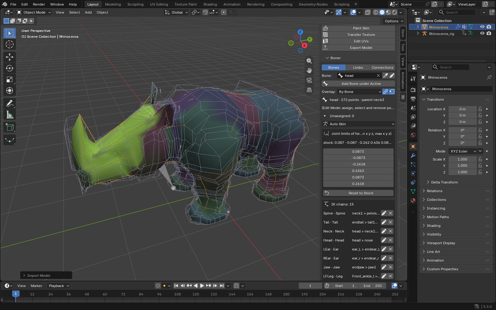
head bone's points are highlighted.- Connections lists the rings where limbs attach. Use Create for Limb, Rename, Delete and, in Edit Mode, Add Stub Socket. For the active ring set the Parent and Child classes, host bone (Set / Default) and corners (Pick Ring / From Selection). Optimise Start and All Rings pick the best starting corner for combining.

Playing a clip
- Choose Load Animation > walk.
- Press Space or scrub the timeline.
- To edit keys, press Select Rig and open a Dope Sheet or Action Editor.

Validate: four kinds of line
Validate (will it load?) checks the creature as Export would write it. The button Check the Creature in the Game panel does the same and then also checks what Export Creature for the Game would refuse (the numbers, the motions, the events). If you only press one, press that one.
- Blocking problems (red) stop the game loading it.
EXPORT BLOCKEDmeans Export would refuse; the message says why. If you deleted, merged or duplicated vertices, press Ctrl+Z. - STOCK: something every base-game creature has is missing. It still loads.
- WARN: advice about export, limbs or connections.
- COMBINE: combining problems, never blocking. Combine Checks: Quick runs test combines; Off only the instant check.
- Leave Combine Checks on Quick and press Validate (will it load?).
- Read the verdict in the status bar and every line in the Info editor.
Export Model
Export Model writes only the model file (.sgm). The game cannot use that file by itself. To play a creature in
the game, use Export Creature for the Game instead. Use Export Model to save a model to open again later, or to
hand to another tool.
- Press Export Model, or use File > Export > Impossible Creatures Creature (.sgm). Save somewhere of your own and keep the stock files.
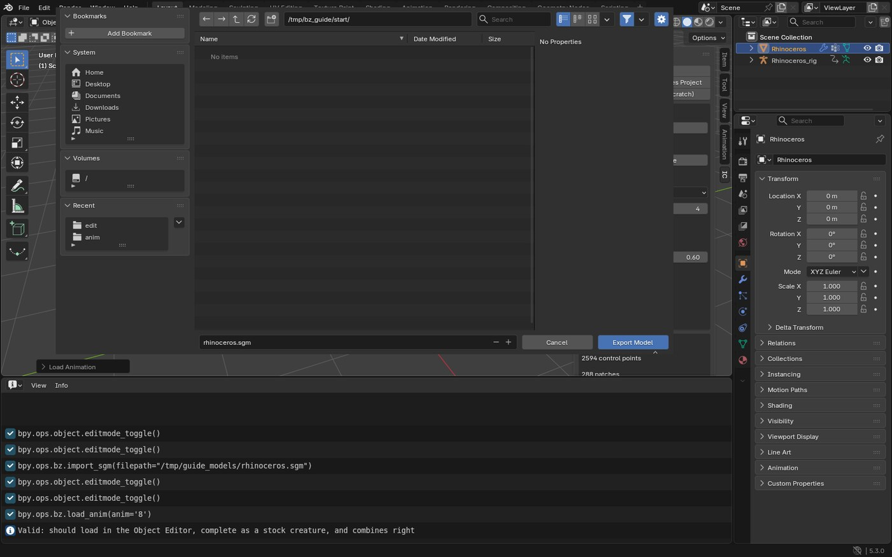
.sgm to write.- Read the report. It lists what changed.
Export checks the model first, and its message says how to fix anything it refuses.
Combine Preview
In the game, the creature creator joins two animals into one. Combine Preview shows what your creature would look like joined with another animal, with your unsaved edits in it. It needs the game's animals as files:
- Press Extract Stock Creatures (the top of the IC Model tab) once. It copies the game's base animals
into Blender's user data folder, under
pyic/engine_stock. The message at the bottom of the window shows the folder. Nothing in your game folder is changed. - Open the Combine Preview sub-panel.
- Choose This Creature Is the Torso or This Creature Donates Parts.
- Choose the other creature: Stock, Object (in this scene) or File.
- Toggle the parts: Head, Tail, Front Legs, Rear Legs, Wings, Front Arms, Mid Legs and Second Mid Legs (the middle legs of insects and spiders; see the note below).
- Press Preview. A ghost appears with its stats and warnings; press Refresh after edits. Clear removes it, Materialize… saves it as a creature and imports it, and Validate Combines runs the quick checks.

Bake Textured Mesh
To render in Eevee or Cycles, press Bake Textured Mesh. It makes a textured copy,
Rhinoceros_baked. Posed (redo panel) bakes the current pose. Editing the copy does not
change the creature.

Keep the creature at the origin without transforms, modifiers or shape keys, and keep the source .sgm where it
was: export reads it again.
Editing an existing animal
The fastest way to a new creature is to reshape a working one. This chapter uses the game's rhinoceros. Start it as a project (File > New > Impossible Creatures Project..., Start from Rhinoceros (Base game); see A new creature from a game animal). The object's vertices are the file's control points, and the export writes only what changed.
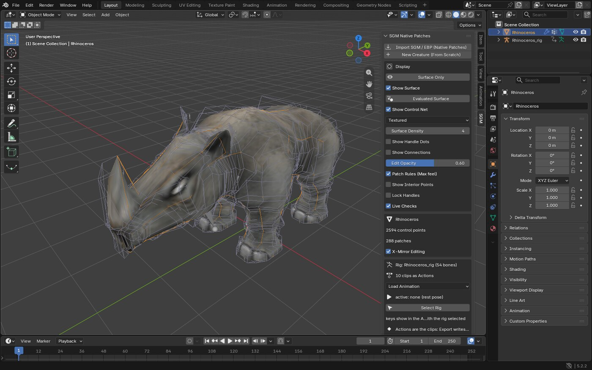
Into Edit Mode: what the points are
- Open the rhinoceros as a project (see above), or open a model file with IC Model tab > Import Model (File > Import > Impossible Creatures Model (.sgm / .ebp)).
- Press Tab. Select points as usual: click, box (B), lasso, A.
- Turn on Show Handle Dots: corners (on the surface) are gold, handles blue.
- Each patch's four interior points are hidden and move automatically. Show Interior Points reveals them. Moving one makes its patch manual; Auto Interiors restores it.
- In the Select box, Corners and Handles select one kind of point.
- Press 3 to select whole patches (see Topology).
It edits like an Editable Patch
With Patch Rules (Max feel) on (default), editing works like a 3ds Max or gmax Editable Patch:
- A moved corner brings its handles. A handle moved alone stays where you put it.
- Set Coplanar keeps a corner's handles in one plane; Set Corner frees them.
- Lock Handles rotates a corner's other handles with the one you move.
- Turn Patch Rules off to place single points exactly.


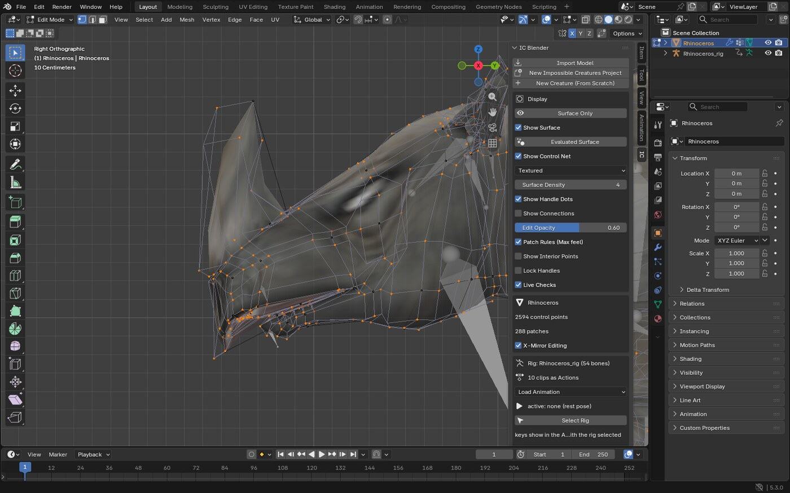
Moving points: lengthen the horn
To move a whole feature, select its corners and the handles around them.
- View from the right (Numpad 3) and box select the horn tip.
- Press G and move. For an exact move, type G Z 0.45 Enter.
- Press Export Model at any time. The report counts the re-encoded points, including those the patch rules moved.


Undo, also across Tab
Ctrl+Z works in both modes and across the mode switch. Ctrl+Shift+Z redoes.

Symmetry: Symmetrize (X) and X-Mirror
Tools > Symmetrize (X) averages each mirror pair into exact symmetry and puts centre points on X = 0.

X-Mirror Editing is on from import but only finds exact mirror partners. Run Symmetrize first; asymmetric edits break the pairs again. The dependable way is to select both sides:
- Select the points on one side, such as the left ear.
- Use Select > Select Mirror (Shift+Ctrl+M) with Extend on.
- Move both, for example G Z 0.3 Enter.
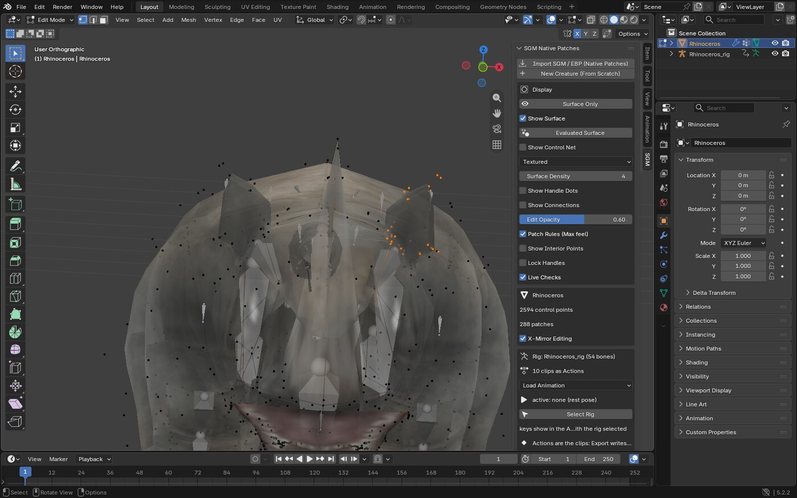

Proportional editing: raise the back
Select the top corner on the back, press O, then G Z 0.35 Enter. Scroll during the move to change the radius. Press O again before precise moves.

Relax Seam Tangents
Tools > Relax Seam Tangents smooths the creases between patches without moving the seams. It treats all seams, or only a seam whose four points you select. Repeat for more effect.
Extrude Patch: growing geometry
Modeling > Extrude Patch grows one patch from one open side (used by only one patch). Select that side's two corners, or all four corners of a patch with one open side. Stock creatures are closed, so delete a patch first. To grow patches on several open sides at once, use Add Quad; for that and more tools see Topology.

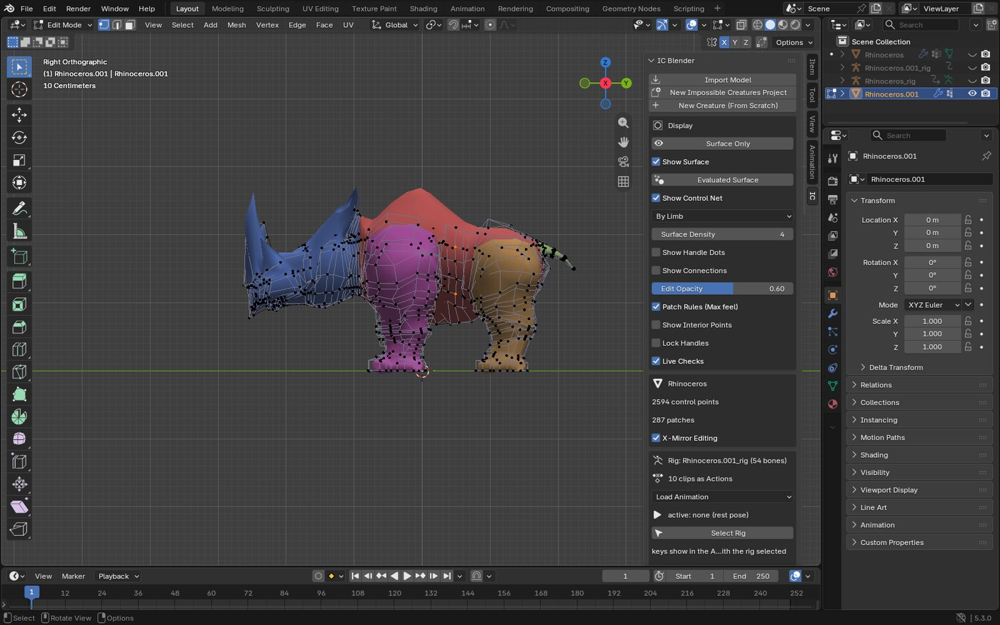
A new patch takes its bone, limb, material and UVs from the patch it grew from.
Loop Cut
In Edit Mode, in Edge select, click an edge that runs along a limb (from the body towards the tip), then press Loop Cut (Topology box). The cut goes round the limb through the middle of that edge, through every patch it meets, and splits each of them in one direction only. The surface does not change. It never crosses a connection ring: a cut that would is refused and the message names the ring. Then pick an edge that runs along the limb instead of one that goes around it. A whole patch selected (Face select) is refused: Loop Cut needs edges. Subdivide still splits whole patches both ways, and refuses where that would cross a ring.
Validate: will it load?
Tools > Validate (will it load?) checks what Export would write. See the status bar and Info editor.
- No prefix (blocks loading): open or over-shared edges, more than 12,288 display vertices, patch points with no bone, or EXPORT BLOCKED (read the reason; undo any vertex Delete, Merge or Duplicate).
- STOCK: standard clips, bones, rings or IK chains are missing. It loads, but may behave differently.
- WARN: advice. clip 'X' will never play means no motion uses that clip's name (see
Animations; the game ignores case and a trailing
.max, soIdle1.maxis simplyIdle1), with a rename hint when the name is a near miss. The same line says when the game will not make a motion for a clip it would otherwise know:Soarwithout aFlyclip, abuild_NNordamage_NNrun with a gap, or a blueprint that already has a motion of that name playing another clip. the blueprint wires a motion node to clip 'X', but this creature has no clip of that name means a clip was renamed or deleted and its motion now plays nothing (the game's own animals have a few such motions too). - COMBINE: results from Combine Checks, never blocking.

Export and the export summary
- Press Export Model and save outside the stock folder. It will not write over an extracted stock creature unless you tick Overwrite Extracted Stock File.
- Export runs the same checks as Validate (without the combine run). If any block loading it refuses, lists them and says how many warnings and stock-rulebook gaps there are. Fix them, or export again with Export Anyway ticked (it is off again for the next export).
- Read the report. It names only what changed: geometry, rest pose, rings, textures or clips, and ends with the check counts. When the body's size changed, the kept clips get new bounds (keys untouched) and the report says so.
Hard edges and materials
A hard edge is a crease: the shading breaks at a corner where two patches meet. A stock animal has some. The box Hard Edges and Materials (shown with a creature, in Edit Mode) has the tools.
- Show Hard Edges marks, as Blender's Mark Sharp edges, the sides where the creature already has a crease. You do not have to press it first. The creases the file already has are kept when you mark or clear another one.
- In Edit Mode, select patches or edges and press Make Hard or Make Smooth (or use Mark Sharp yourself). The export writes them as the creature's hard edges.
- A hard edge creases the shading at the corners where two patches meet. Between the corners the game keeps the shading smooth at its finer detail levels. The game does not copy a creature's hard edges into a combination of it, so a hard edge is how the creature itself looks. Check how combinations look in the game.
- Show Material Slots gives the mesh the creature's own materials as Blender material slots. Select patches and press Set Material (or assign a slot in Blender's Material tab). The export writes each patch's material. A slot number the creature does not have is refused.
Next: take it into the game
Export Model writes a model file only. To play the creature in the game, use Export Creature for the Game in the Game panel of the IC Game tab. The chapter A new creature from a game animal goes through it, and Check, export, install, remove and share explains every step.
Delete patches with the add-on's tools (X > Patches), not Blender's vertex or edge delete, merge or sort.
Topology: making geometry, not just moving it
These tools add, remove and join patches. They are in the Modeling, Topology (Edit
Mode) and Tools boxes. The examples use cheetah.sgm.
The rule: two patches are joined only when they share all four control points of a side. A side used by one patch is open, and the game will not load it. Corners in the same place must still be welded.
Patches are selectable
- Press Tab, then 3.
- Click a patch. Box, lasso, circle, Select Linked and Grow / Shrink work too. Alt+Z selects through the body.
- H hides patches, Shift+H hides the unselected, Alt+H unhides.

Delete Patch and Fill Hole
- Select the patches.
- Use Modeling > Delete Patch or X > Patches. A patch on a connection ring is refused.
- Close the hole, or Validate blocks it.
- Use Topology > Fill Hole. With several holes, select a corner of one first. A hole needs an even number of sides, at least four.
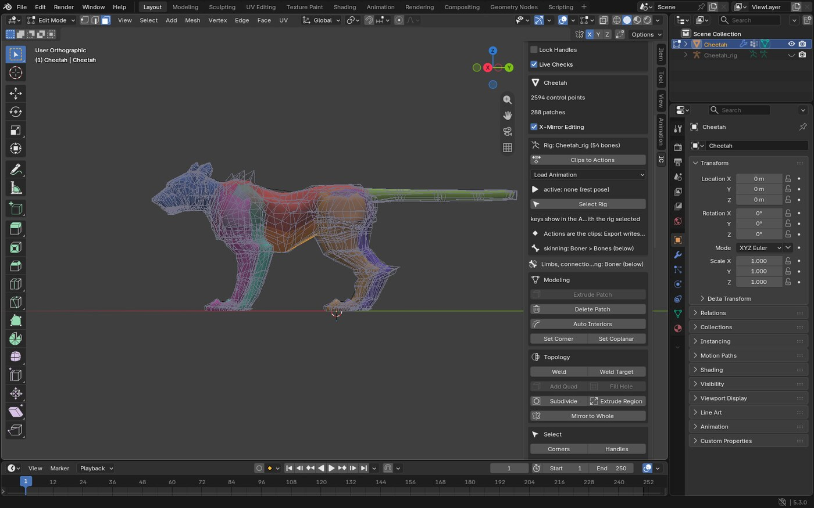
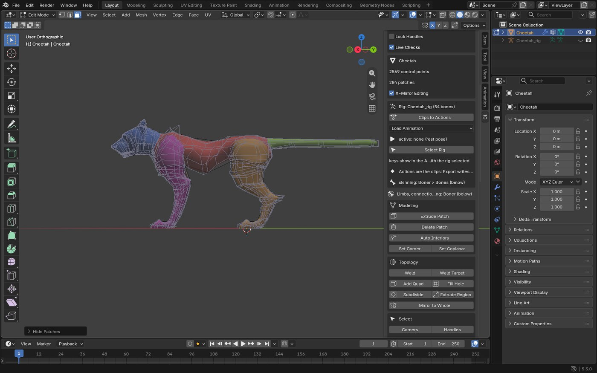

Add Quad and Weld
Add Quad grows a patch on each selected open side, several at once; Extrude Patch (see Editing an existing animal) grows one. To close a gap, move the new corners into place and Weld.
- Select an open side and press Topology > Add Quad.
- Move the two free corners onto the far corners of the hole.
- Select all four and press Weld. Threshold 0 means 1 % of the creature's size. Weld Target merges into the active corner instead.
- Welding two open sides also merges their handles, which closes the seam.

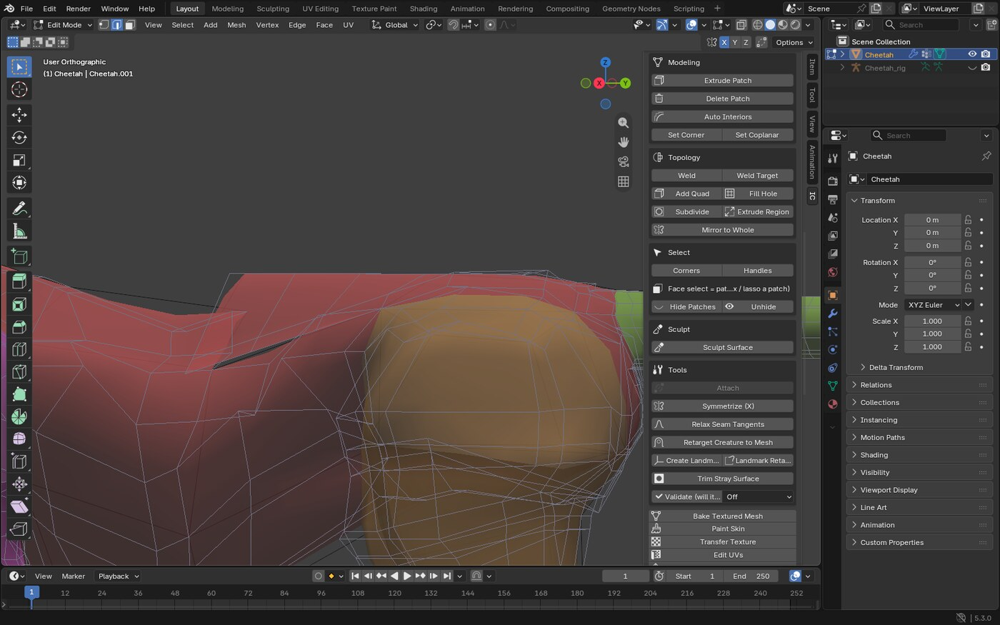


Subdivide: more patches where you need them
Subdivide splits each selected patch into four without changing the shape. The split carries on through neighbouring patches so no gaps form.


Extrude Region
Extrude Region builds walls around the selected patches so they can be lifted. Amount (height) starts at 0, so at first the walls are flat: set it in the redo panel, with Outline (scale of the top), or press G right after to move the new top. To drag at once, search for Extrude Region (Drag) (needs Developer Extras).

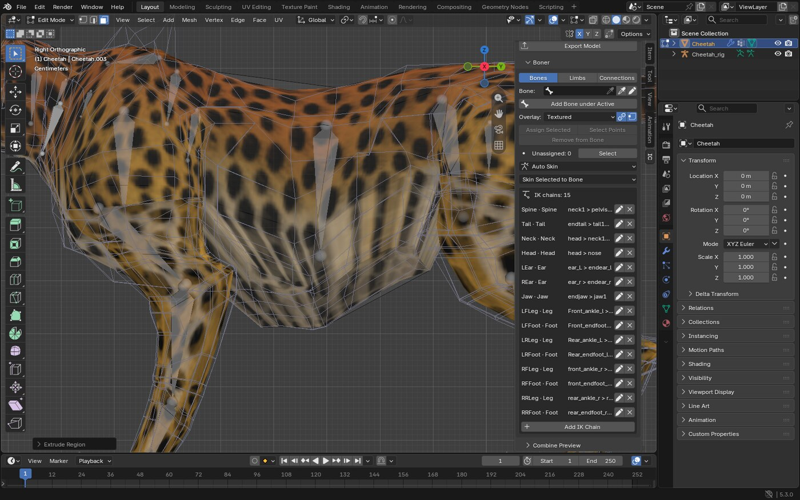
Mirror to Whole
Mirror to Whole builds the other half from one half. It mirrors the selected patches (or all) across X = 0, joins the centre seam, and uses the matching left or right bones and limbs. Snap Seam to Plane (on by default) puts seam points on X = 0.
- Delete the connections whose rings reach into the unwanted half, then delete that half's patches.
- Deselect everything and press Topology > Mirror to Whole.
- Mirror to Whole does not rebuild connection rings. Make each deleted connection again in Boner > Connections (Create for Limb, then Pick Ring), then run Validate: the game's combiner refuses a creature that lacks a socket.


Attach: two creatures into one
In Object Mode, select the other creature, make yours active and press Tools > Attach. Choose the Limb and Bone for the new parts.
Every attached patch goes into that one limb, and every attached point is skinned to that one bone: the other creature's skin and limbs are dropped, along with its rig and connection rings. Materials are matched by name. Weld the seams afterwards, then re-skin the new points in Boner > Bones and move patches to their limbs with Assign Selected to Limb.


What it costs: the display-vertex ceiling
The game limits a patch mesh to 12,288 display vertices. A patch costs about 16 where its seams weld and 25 where it has its own texture island.
- Combining adds the other creature's limbs to the same mesh. To stay safe, use at most 6,584 for the torso and 7,879 for the limbs.
- Validate reports your real count; patch count alone does not tell you.
- Attach refuses to exceed 767 patches.
Sculpting: brushes instead of control points
Shape a creature with Sculpt Mode brushes, then fit the result back into its patches. Everything else stays, and
untouched patches keep their exact points. The example is cheetah.sgm.
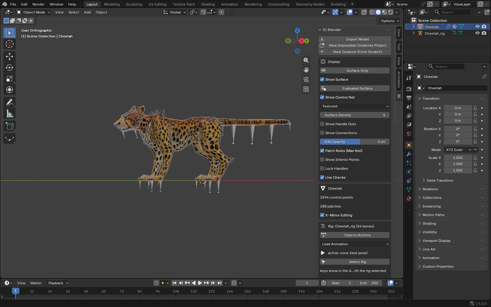
Sculpt Surface
- In the Sculpt box press Sculpt Surface.
- Set Density in the redo panel (F9; 4–12, default 7). Higher gives finer vertices, not finer patches.
- A joined mesh named
<creature>_sculptis made, so brushes do not tear the seams. - The creature and rig are hidden and Sculpt Mode starts.

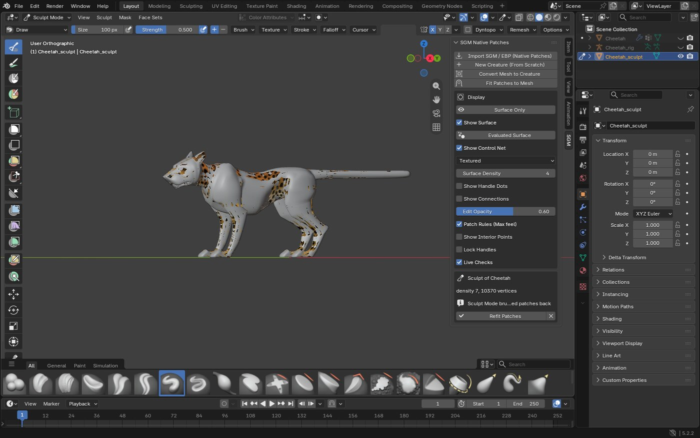
Sculpt it
Use any brush or mask that only moves vertices.

While sculpting, keep the topology (no Dyntopo, Remesh or deleting) and leave the sculpt object where it is.
Refit Patches
- Press Refit Patches.
- Only patches you changed are refitted.
- Check the residual in the report: the detail the patches could not hold.
- One Ctrl+Z undoes it. The sculpt mesh is removed unless Keep Sculpt Mesh (redo panel) is on.


Reading the residual
Broad changes fit closely. Scales, wrinkles and sharp creases come out smoother. Either subdivide those patches first (see Topology) or paint the detail (see Textures).
Finish with Refit Patches or Discard Sculpt (the X next to Refit Patches) before you export.
Making an animal from scratch: a rhino
This chapter builds a crude rhino: start a creature, shape it, add a horn bone, check limbs and skin, animate, combine and export.
What the scaffold gives you
New Creature (From Scratch) writes a complete creature to the .sgm you choose and imports
it. At Detail 1 it has:
- a 48-bone skeleton;
- a closed body of 248 patches with torso, head, tail and four legs;
- 13 limbs (wings and front arms are empty stubs) and 12 connection rings;
- a labelled checker texture;
- the 8 standard clips and the base-game IK chains.
The options are Name, Detail 1–3 (1 is coarsest), Standard Clips, IK Chains and Clips as Actions.
1. New Creature (From Scratch)
- Press N and open the IC Model tab.
- Click IC Model tab > New Creature (From Scratch).
- Set Name to
Rhino, keep Detail 1, save asrhino.sgm. - Set the shading to By Limb and tick Show Connections.


2. Shape it in Edit Mode
Dragging shared points keeps the surface closed. X-Mirror Editing is on.
- Press Tab and tick Show Handle Dots.
- Move with G and scale with S. Boner > Limbs > Select Limb selects a body part; proportional editing (O) keeps it smooth.
- For a rhino, make it lower and wider, enlarge and lower the head, shorten the tail and thicken the legs.
- Press Tab to check the shape.
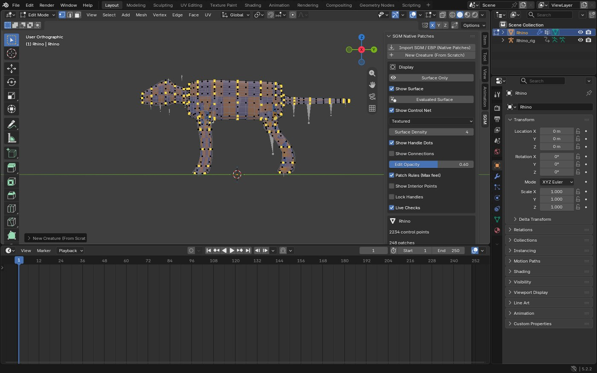
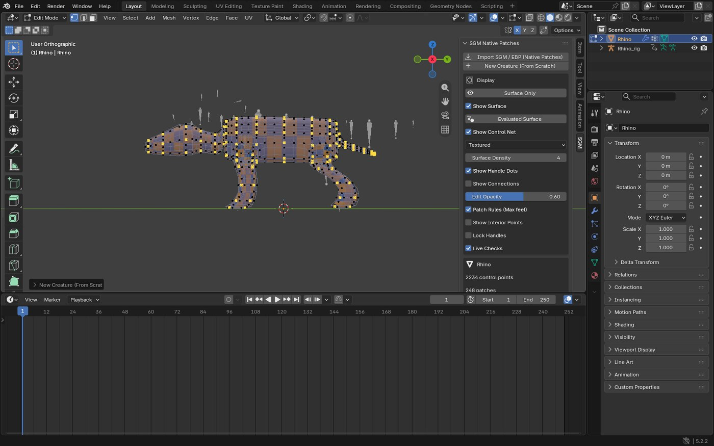
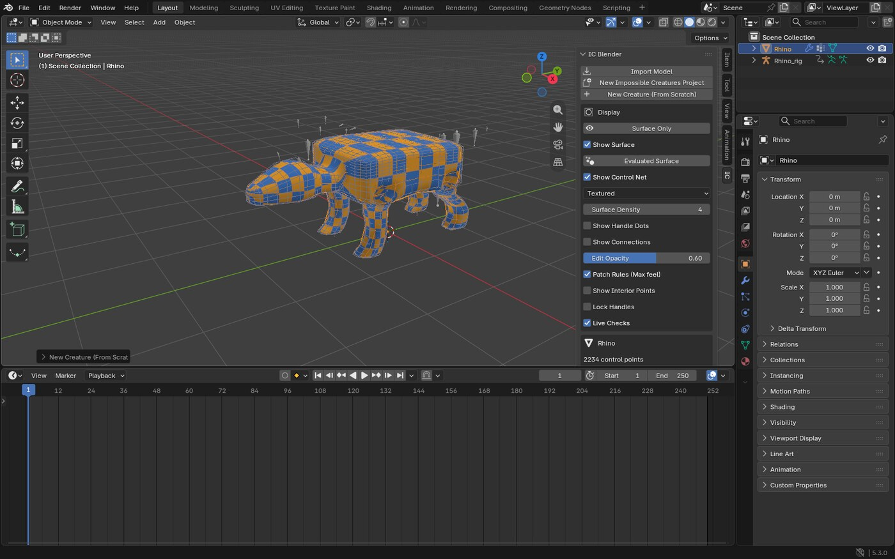
Moving points does not move bones: edit the armature. Export gives the clips it keeps new bounds when the body's size changed, so no re-keying is needed for that.
3. A horn: pull it out, give it a bone, skin it
Extrude Patch needs an open side and the scaffold is closed, so pull the horn from existing points.
- In Edit Mode select the top-front points of the head.
- Press G and drag them forward and up. Keep them selected.
- In Object Mode, set Boner > Bones > Bone to
head(or use Pick Bone). Click Add Bone under Active, set Namehorn, an Offset and a Length such as 0.25 m. - Press Tab and click Assign Selected.

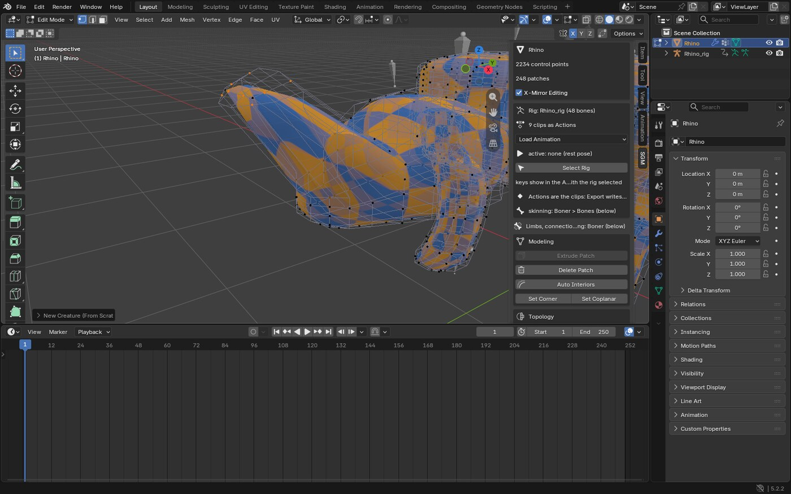

horn bone, with no points yet.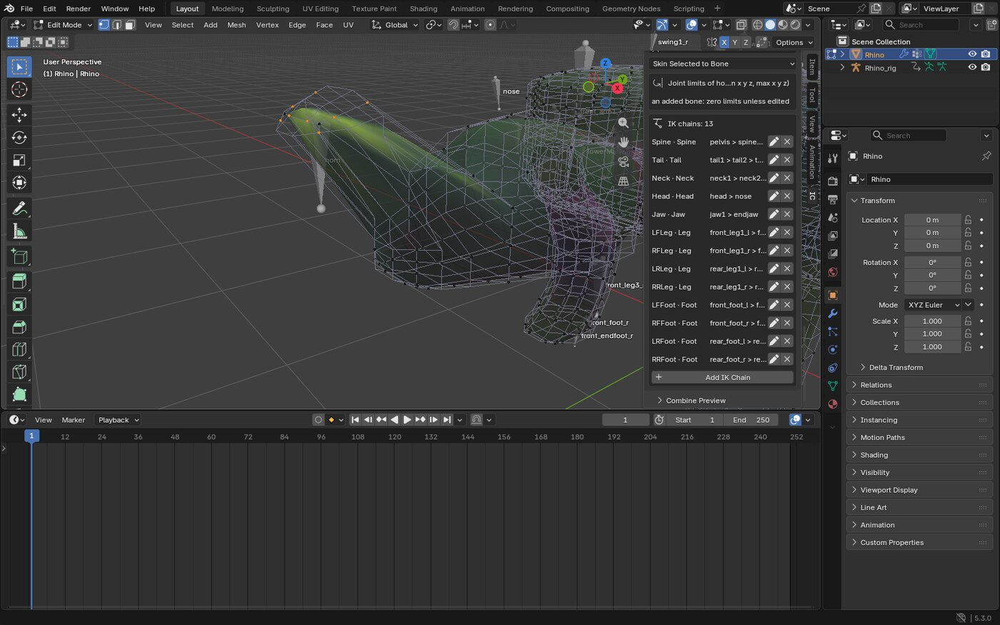
horn.4. Limbs and connections
The scaffold already has these, so just check them in Boner.
- Limbs lists each limb's class, patches, bones and status.
- Click a limb to see its Side / Position / Plane / Type / Non-Swappable settings and bones, with Select Bones, Set Root Bone, Add Active Bone and Remove Active Bone.
- Click Rename and enter
Rhino_HornedHead. Combining uses a limb's class, not its name. - Connections lists the rings. With Show Connections on, click a row to highlight it.


5. Skinning: is every point on a bone?
The scaffold is fully skinned. Export refuses patch points that have no bone.
- Use By Bone shading; points with no bone are orange.
- In Edit Mode click Select next to Unassigned.
- Click Assign Selected, or Auto Skin > Selected, else Unassigned. Auto Skin > Reset All replaces the whole skin, so check the result. Remove from Bone unassigns.
6. Animation
- Choose Load Animation > Idle1 and press Space.
- See the keys in a Dope Sheet with Only Show Selected off, or click Select Rig and use the Action Editor.
- For a new clip, select the rig, create an Action named
headbob, enter Pose Mode (Ctrl+Tab) and key the rotation ofneck2,neck3andheadat frames 1, 11 and 21, head down at 11. - Export adds it as a new clip. For the game to play it, it also needs a motion: see Animations and motions.


headbob clip.Only the rig's active Action, Actions on its NLA tracks and imported ones are exported.
7. Validate, Combine Preview, Export
- Press Validate (will it load?) with Combine Checks on Quick. One warning is
expected and does not block: no
.luafile (a combine keeping these legs gets zero ground speed). - In Combine Preview choose This Creature Is the Torso, Stock,
bull, tick only Head and click Preview. - Click Export Model and save as
rhino_done.sgm(a model file you can open again later).


8. Take it into the game
A creature built from the template has no game animal behind it, so the export has no original to copy. It makes the blueprint for you, from your clips, and starts the numbers from the cheetah's. The export window says so (“Built from nothing: a generated blueprint”; the field Start stats from lets you pick another animal to start the numbers from).
- Open the IC Game tab, Game panel. Press Check the Creature.
- Press Export Creature for the Game. Give it a name such as
my_rhinoand a display name, and press OK. - Press Install into Test Game and start the game from the test copy.
The chapter A new creature from a game animal shows these steps in full. The template's skin is a plain checker pattern, so a combined creature looks patchy.
Fitting a mesh: an outside model becomes a creature
Fit Patches to Mesh turns an ordinary mesh (sculpt, scan, .glb, .obj) into
a patch creature. It borrows a template creature's skeleton and materials, writes a .sgm and imports it. The
example is Suzanne, without eyes and subdivided twice.
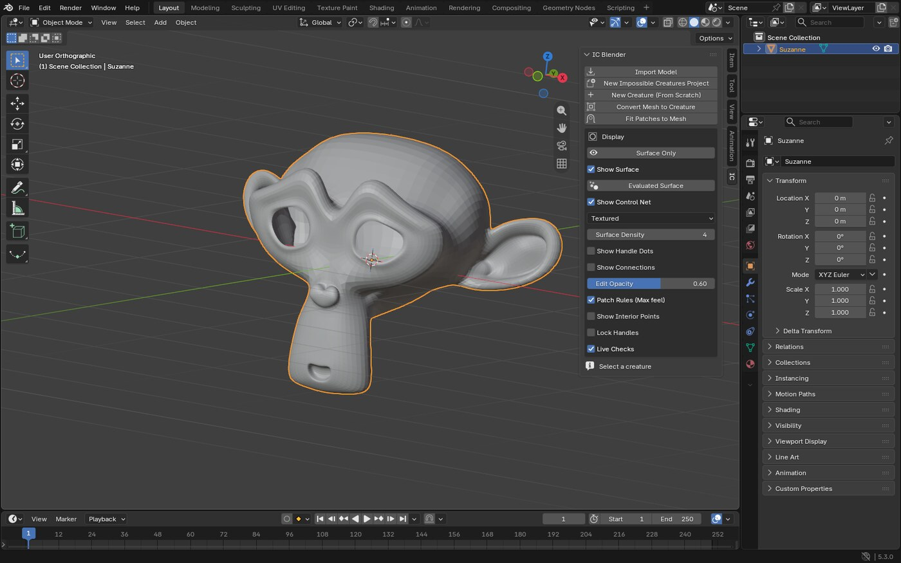
What the fit will accept
- The body must be one connected piece. Open edges are fine with QuadriFlow, which closes them; with Own Quads they stay open, and the game then refuses the creature (Validate says so).
- Vertices split at seams (usual in glTF) are fine; the fit welds a copy first.
- Separate pieces, such as eyes, teeth, claws or horns, come along. With Fit Separate Pieces on (the default), every piece is fitted on its own and the pieces are joined into one creature. The biggest piece is the body and gets the most patches. Each small piece gets a share by its size, at least 6. Too many pieces is refused: join the small ones (Ctrl+J) or delete what the game will not show. Untick Fit Separate Pieces and a mesh of several pieces is refused: delete the extra pieces, or separate them (Edit Mode: P > By Loose Parts) and fit the skin alone.
- Your mesh is not changed.
Running the fit
- Select the mesh.
- Press Fit Patches to Mesh and set the redo panel (F9):
- Patch Budget (300): target number of patches.
- Layout: QuadriFlow remeshes a copy; Own Quads uses your faces.
- Seam Smoothness (0.02): keep it small.
- Iterations (10): fitting rounds.
- Skeleton Template (.sgm): the creature to borrow from.
- Output .sgm: where to save.
- Error Heat Map, Split into Limbs and Fit Separate Pieces: on by default.
- Wait, about half a minute for 300 patches and longer for more.
Left empty, Skeleton Template (.sgm) uses the game's wolf.

The report gives the fit error (rms, p95, max) and whether symmetry was kept.

To see the heat map, set Viewport Shading > Color to Attribute.
The budget, and the ceiling it is measured against
More patches follow the mesh better but take longer. The game limits a creature to 12,288 display vertices, at 16 per patch where seams weld and 25 with its own texture island (as Transfer Texture makes).
| Budget | Result |
|---|---|
| ≤ 263 | safe to combine with stock creatures |
| 264 – 491 | warning: loads, but combining may fail |
| 492 – 767 | strong warning: loads only if seams weld |
| > 767 | refused |
For a creature that combines, keep the torso under 6,584 vertices and the limbs under 7,879. Validate shows the count.
Fit to rig: the creature is riggable at once
- Split into Limbs shares patches and points among the template's limbs and bones.
- Without it everything goes in the Torso, other bones become stubs, and bone tools refuse them.
- Bones are not moved until you ask. Press Move Skeleton to the Body (under Tools, after a fit; once per fit) to move the template's bones into your new shape. Then press Select Rig, press Tab for the rig's Edit Mode and nudge any bone that sits off. The export writes the new rest pose. Or retarget with Move Bones on (see Retargeting).

Your own quads, as they are
For a clean, low quad mesh whose faces you want as the patches, set Layout to Own Quads in Fit Patches to Mesh: each quad becomes one patch, with no fitting and no patch budget.
A mesh at creature scale
Small meshes are fine: the fit scales a copy up for QuadriFlow when needed.
After the fit
- Run Validate (will it load?).
- Move the bones in the rig's Edit Mode, and fix skinning in Boner > Bones.
- Place the sockets in Boner > Connections. (A fitted creature has none, so the game cannot combine it. Rings are made with Create for Limb and edited by hand: see Bones, limbs and connections. The sure way to a creature that combines is Retargeting a game animal.)
- Copy a textured source's skin with Transfer Texture (see Textures).
- If the template left extra surface, use Trim Stray Surface (see Retargeting).
Retargeting: an existing creature takes another shape
Retargeting keeps a working creature (patches, limbs, rings, skeleton, skin, clips) and reshapes its surface to match a target mesh. The tools are in the Tools box.
| Tool | Use it when |
|---|---|
| Retarget Creature to Mesh | the target is a similar shape |
| Create Landmarks + Landmark Retarget | parts must move across the body |
| Trim Stray Surface | the target lacks a part the creature has |

Retarget Creature to Mesh
- Add the target mesh: one closed skin (split seams are fine).
- Select the creature and press Retarget Creature to Mesh in the box Tools. A small window opens: pick the Target Mesh and press OK. (If you select your mesh first and the creature last, the target is already filled in.)
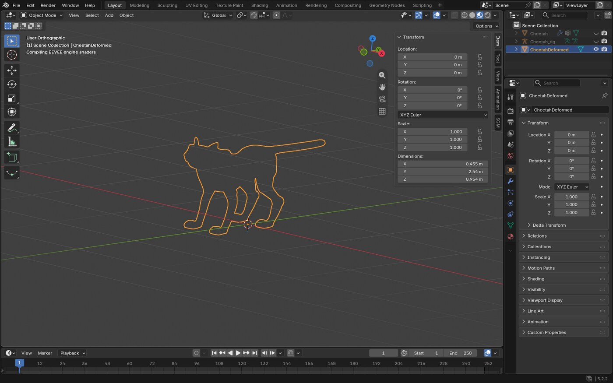
- Pin Rings (on): sockets stay put. Off may cause combine warnings.
- Scale to Target (on): aligns and resizes the target to the creature.
- Keep Symmetry (on): keeps a symmetric creature symmetric.
- Move Bones (on): bones follow the surface.
- Seam Smoothness (0): leave at 0 to keep stock-style seams.
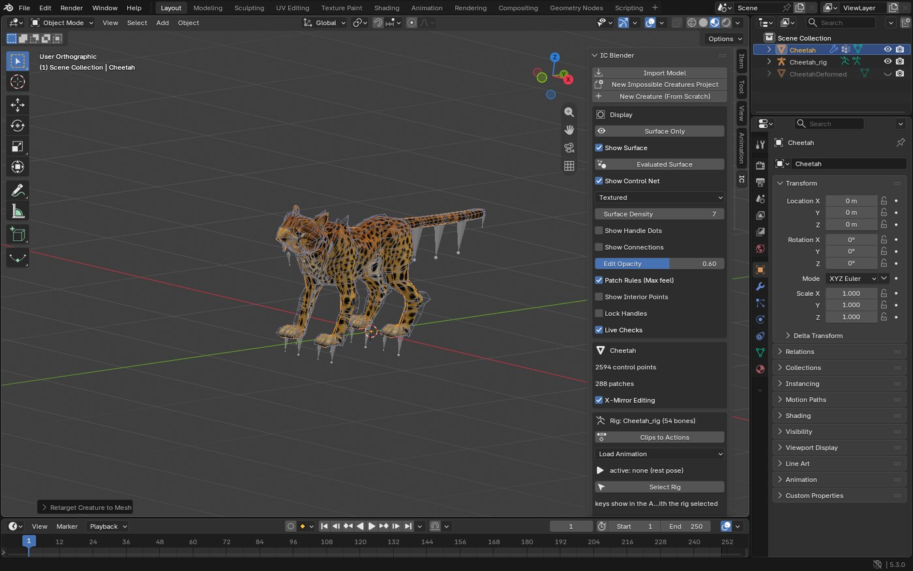
One Undo restores points and bones.
The limit a closest-point fit has
Points move to the nearest part of the target, so use landmarks when limbs sit in different places.
Create Landmarks and Landmark Retarget
- Press Create Landmarks. It adds Empties named
LM_<name>for limb tips, limb roots and the torso. - Drag each onto the matching place on the target. An Empty can also be named after a bone
(
LM_endfeeler_l). - Press Landmark Retarget. A small window opens: pick the Target Mesh and press OK. It warps surface and bones to the landmarks, then fits.

- Warp Smoothing (0.001): 0 hits every landmark exactly.
- Warp Rings (on): sockets follow the warp.
- Other options are as above.
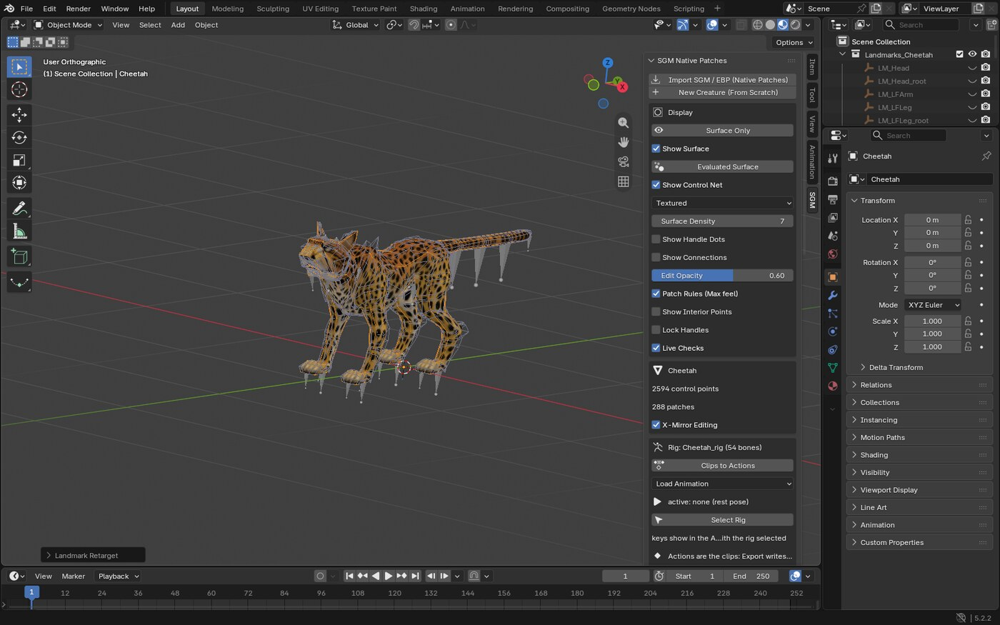
Check coverage by limb in the report: it warns which limbs still miss the target.
Limbs, sockets, bones and the walk stay those of the animal you started from. Choose that animal for its body plan.
Trim Stray Surface
Retargeting ignores creature surface with no target under it. Trim Stray Surface finds it.
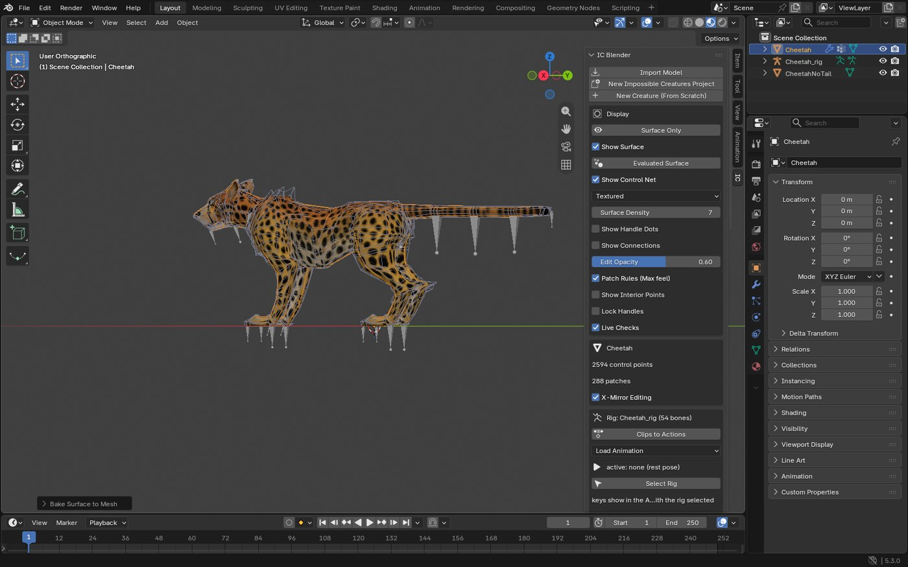
A patch is stray when at least Stray Fraction (half) of it lies farther than Stray Distance (2 % of size) from the target. The target defaults to the last fit or retarget mesh. Choose an action:
- Select (default): only selects the stray patches.
- Delete: removes them and fills the holes it can. Ring patches are refused. Undo takes several steps: one for the delete and one per filled hole (the report gives the number). Check for open sides.
- Collapse onto Target: folds them onto the body without changing the patches. Best for an unwanted limb. Keep the Shared Edge (on) leaves well-fitting neighbours still.


Validate also warns about stray patches (WARN trim).
Skinning and re-skinning
Skinning decides which bone moves each control point. The tools are in the IC Model tab under
Boner > Bones. The examples use the stock rhinoceros.sgm.
The model: one bone per point, no weights
- Each control point follows exactly one bone. There are no blended weights.
- In Blender each bone has a vertex group, used at weight 1.0.
- Every point a patch uses needs a bone, or Export refuses.
Seeing the skin: By Bone
- Import the rhinoceros (IC Model tab > Import Model) and open the sidebar (N) on the IC Model tab.
- Open Boner and choose the Bones tab.
- Set Overlay to By Bone. Points take their bone's colour; points with no bone are orange.

- Pick a bone in the Bone field (here
head). Its points turn bright, the others dim, and the tab shows its point count and parent.

head, stands out.Selecting a bone's points, and Pick Bone
- Press Tab for Edit Mode. Assign Selected, Select Points and Remove from Bone appear on the tab.
- Press Select Points to select the active bone's points. Extend, in the redo panel, adds to the selection.

- To find a point's bone, press the eyedropper (Pick Bone). Hover a point or rig bone to see the name in the viewport header. Click to make it active, or press Esc to cancel. You can orbit while picking.

Moving points to a neighbouring bone
To see the skin bend, press Select Rig, enter Pose Mode and rotate head
(R).

- Reset the pose (Alt+R), select the creature and enter Edit Mode.
- Select the points to move (here 20 lower-neck points of
neck3). - Make
headthe active bone and press Assign Selected. Or use Skin Selected to Bone, under Auto Skin, and choose the bone from a list.

head.- Pose the head again: the moved points now swing with it. Ctrl+Z undoes an assignment.

Points can be assigned only to bones with Deform ticked.
Taking points off a bone: Remove from Bone, Select Unassigned, and the export refusal
- Make
ear_Lactive, press Select Points, then Remove from Bone. The points turn orange and Unassigned turns red. Selected points of other bones are left alone.
- Export Model now writes nothing, and Validate (will it load?) reports that export is blocked.
- Press Select next to the Unassigned count (Select Unassigned). Then assign the points to a bone, or run Auto Skin.

Auto Skin
Auto Skin gives each point its nearest bone. Choose which points:
- Selected, else Unassigned (default): the selected points in Edit Mode. With none selected, or in Object Mode, every unassigned point.
- Selected (Edit Mode only).
- Unassigned.
- Reset All: every point, replacing the current skin.
It skips stub bones (wing and arm sockets), end bones (names such as endjaw) and bones with Deform off.
Keep Handles Follow Corners (redo panel) on: otherwise patches can bend differently in battle.
- With the ear points still selected, run Auto Skin > Selected, else Unassigned. Check the result with By Bone.

- Reset All re-skins the whole creature. The result differs a lot from a stock skin, so fix seams by hand. With every point selected, the two "Selected" choices refuse.
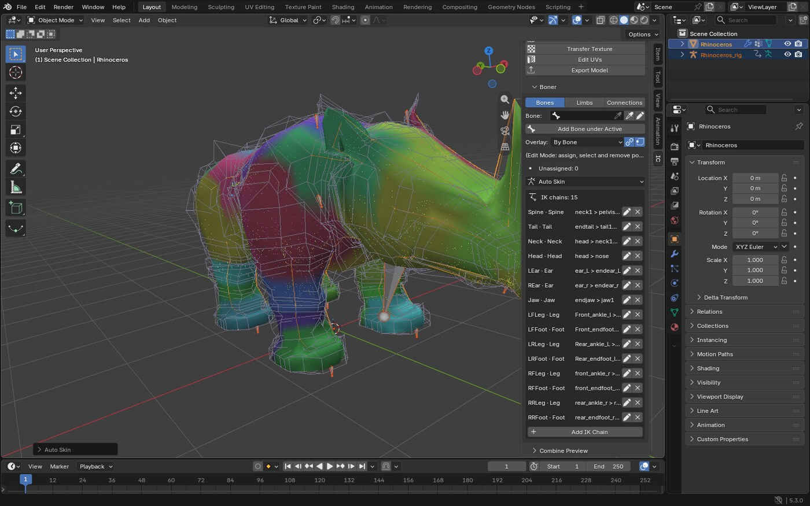
Blender's own way: vertex groups and weight painting
Blender's vertex-group tools work too, if each point ends up in one bone group at weight 1.0.
- In Edit Mode, select points. Remove them from the old group and assign them to the new one at weight 1.0 (Object Data properties, or Ctrl+G > Assign to Active Group).
- By Bone shows the new owner at once, and Export keeps the change.

- A point in two groups, at partial weight or in no bone group can't be exported. Other skin edits stop too.
- Press Ctrl+Z, or select the point and press Assign Selected. Select Unassigned finds points in no group.
Export: the summary line
Press Export Model. The report names what changed, for example
skinning: 35 bone range(s) rebuilt. A high count is normal after a small edit.
Skinning and combining
The combiner moves a limb by its bone list. Skin a limb's patch points only to:
- the limb's own bones;
pelvis,spine1,spine2,spine3,neck1ortail1;- its connection's host bone.
Warnings:
- Other points go to the root bone when the limb is grafted (for a leg, the combiner fails). Re-skin them, or add their bone to the limb (Boner > Limbs > Add Active Bone).
- Don't skin points to a stub bone, and don't leave a connection's host bone without points.
- Validate reports these as STOCK lines. Export still works, but the creature won't combine like a stock one.
To select interior points, tick Display > Show Interior Points.
Add and remove patches with the Modeling and Topology tools, not Blender's delete, merge or sort.
Re-texturing and texturing from scratch
Paint a creature's textures or move its UVs, then export. The examples use the stock
rhinoceros.sgm.
How textures live in the .sgm
- Textures are inside the
.sgm. Import makes each a Blender image namedSGM_<file>. - Keep sizes powers of two. A texture holds at most 256 colours.
- Each patch uses one material, and each material names a texture.
- Pure magenta (255, 0, 255) is transparent in game.
Seeing the textures: the live overlay
- Use IC Model tab > Import Model and pick
rhinoceros.sgm. - The shading selector in Display starts on Textured.
- Choose Plain, By Limb or By Bone to check shape or ownership.
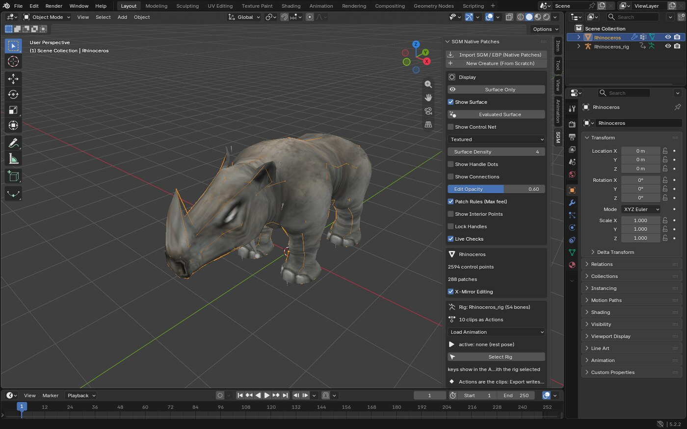

To view a texture, open an Image Editor and pick its SGM_… image.

Paint Skin: repainting a texture
- With the creature active, press IC Model tab > Paint Skin. It makes a
<creature>_bakedmesh and enters Texture Paint. - Paint on the mesh, or in the Image Editor in Paint mode. Use pure magenta for transparency.
- Return to Object Mode. The baked mesh is only for painting and is never exported.


Paint Skin reuses an existing baked mesh; delete it after moving control points.
Export: only painted textures are re-encoded
- Select the creature, then press IC Model tab > Export Model.
- The report lists what changed, for example
textures: 1 edited (rhino02.bmp: 3812 texels).
Unpainted textures are unchanged. A painted one keeps its palette where possible. An image whose size changed gets a new palette. When more than 5 % of the texels changed (a repaint rather than a brush stroke), Export encodes the skin both ways, keeping the old palette and quantising the whole picture afresh, and writes the one whose colours are closer to your picture; when the fresh one wins, the report says so with both errors.
Load Skin Image: a picture file as the skin
To use a picture made elsewhere, press IC Model tab > Load Skin Image (next to Paint Skin) and pick a PNG, JPEG, TGA or BMP. Skin chooses which texture it replaces when the creature has several. A picture of another size is scaled to the skin's size (Resize To The Skin; off refuses it). The picture goes into the skin image, so Paint Skin continues from it, and Export writes it into the texture as above.
UV editing: the UV cage
Each patch has one UV point per corner.
- With the creature active, press IC Model tab > Edit UVs. It makes a
<creature>_UVcagemesh with one quad per patch. - In Edit Mode on the cage, select faces and open the UV Editor. Pick the texture, then move, rotate or scale the UVs.
- Return to Object Mode, select the creature and press Apply UVs. This is optional before Export, which reads the cage too.
- Export reports the changed patches, for example
UVs: 62 patches.
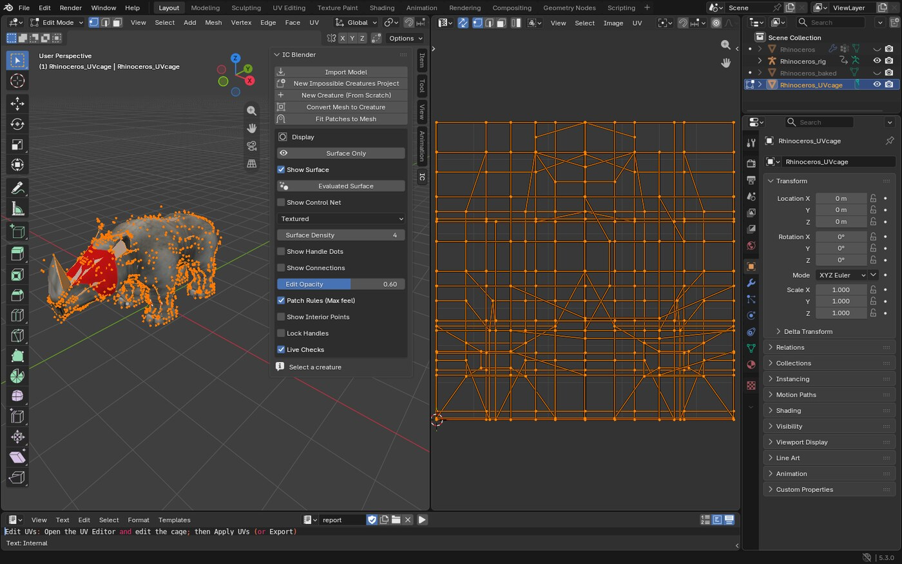

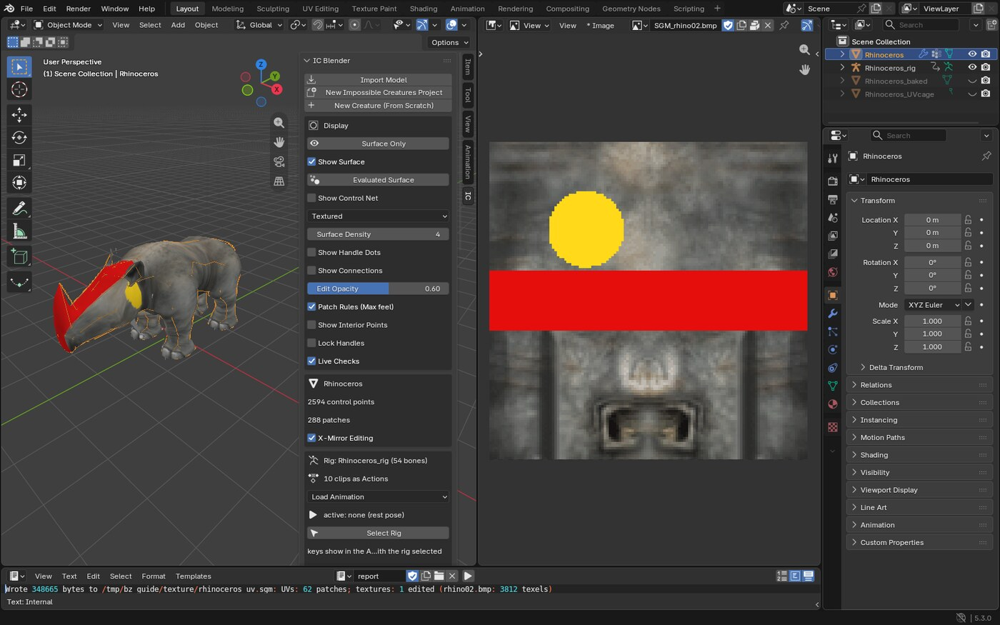
Texturing from scratch
You can't add materials or textures by hand, so start from a creature with the slots you need.
- Press IC Model tab > New Creature (From Scratch). Set Name, keep
Standard Clips, IK Chains and Clips as Actions on, and choose
where to save the
.sgm. Detail 1 is the coarsest body; 3 has three times the patches, so the checker lands differently. - It has one 256x256 checker texture on every slot, named after the creature in lower case:
<name>01.bmp, for examplenewcreature01.bmp. Its Blender image isSGM_newcreature01.bmp. - Paint over it with Paint Skin.
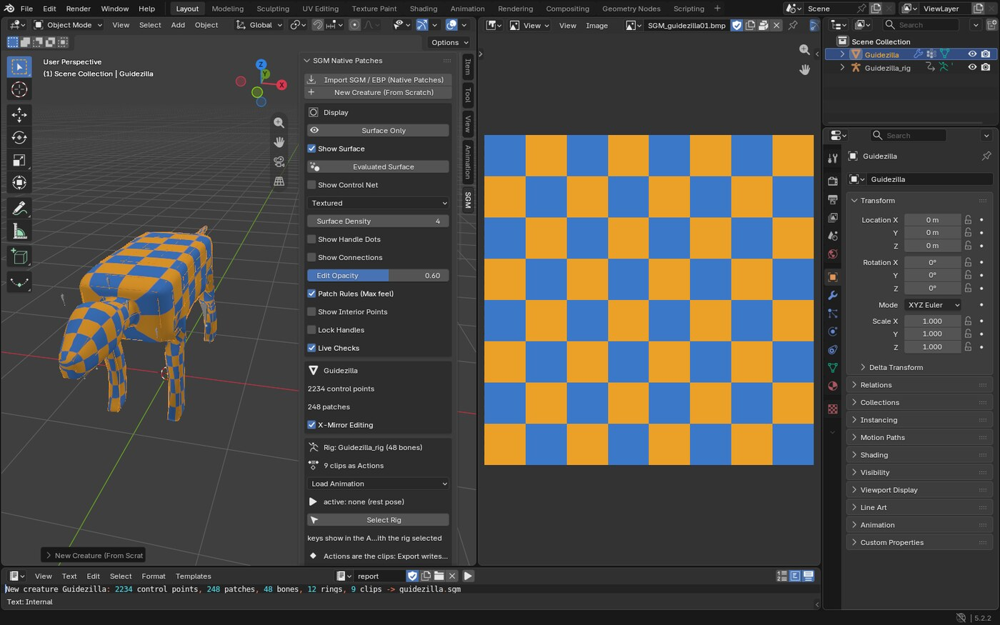
To use your own PNG, copy its pixels into the creature's image; a newly opened image isn't exported.
- Use Image > Open in an Image Editor.
- Resize it to match the creature's image (Image > Resize).
- In the Python Console:
src = bpy.data.images["skin.png"]; dst = bpy.data.images["SGM_newcreature01.bmp"]; dst.pixels = src.pixels[:](use your creature's name in lower case in place ofnewcreature). - Export. Only colour is exported, so use magenta for transparency.

Transfer Texture: a source mesh's own skin
A fitted or retargeted creature wears the template's skin. Transfer Texture gives it the source mesh's skin, with no unwrapping. The source needs a UV layer and an image texture.
- Keep the textured source mesh in the file.
- Select the creature and press Transfer Texture. It uses the mesh that Fit or Retarget recorded. To use another, change Source Mesh in the redo panel.
- It bakes the source onto one new texture, with a separate square for each patch.
- All materials now use that texture. Export writes it.
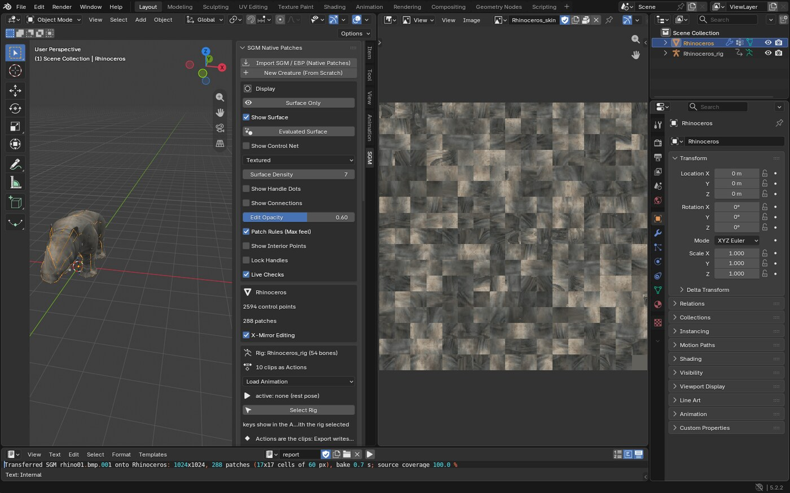
- With no recorded mesh (a creature that was not fitted or retargeted, such as a new one) it stops with Choose a
source mesh, and no redo panel appears to choose one. Run it from Blender's Python Console instead, with the
creature selected:
bpy.ops.bz.transfer_texture(source="MyMesh"), whereMyMeshis the name of the textured mesh. - Low source coverage means parts of the creature found no source and took nearby colours. Raise Ray Distance.
- Size is 256, 512, 1024 (default) or 2048.
- The most patches a creature can load with drops from about 760 to about 490, and the combine budget by about a third. Check with Validate.
- Reflection and specular textures are dropped, with a warning.
- It refuses during a sculpt. A patch creature can't be the source: use its Bake Textured Mesh result.
Refusals and gotchas
- Missing image. Don't delete
SGM_…images: Export refuses. Undo or re-import. - Old UV cage. After Extrude Patch, press Edit UVs to rebuild it.
- Modifiers and transforms. Extra modifiers, shape keys or an object transform block Export. Apply or remove modifiers; clear transforms with Alt+G / R / S.
- Wrong object. With the baked mesh or UV cage active there's no Export button.
- Soft brushes. Only exact magenta is transparent; soft edges leave near-magenta fringes that show.
- Hidden creatures still draw. Exclude their collection, or delete them.
- Saving the .blend. Don't unpack or purge the skin images.
Bones, limbs and connections (Boner)
The game loads a creature when its patches are watertight and rigged. To combine in the game, its limbs, connections and skeleton must also follow the rules of the game's combiner (the creature creator). Edit them in the IC Model tab under Boner: Bones | Limbs | Connections. Every edit can be undone, and a refused edit changes nothing.
The model in one minute
- Limbs are named groups of patches, each with a class and a bone list. A class combines Side, Position, Plane and Type; Non-Swappable parts stay with their torso.
- A limb other than the Torso is a root bone and its descendants. The Torso owns every other bone.
- Stub limbs have one bone and no patches, so the creature can still receive wings or arms. The game's check requires the leg, arm and wing classes.
- Connections are the sockets where limbs are grafted. Each has a Parent class (usually Torso), a Child class, a host bone in the parent limb, and a ring of corners (6 for head or tail, otherwise 4).
- The game finds bones by standard names (
pelvis,spine1,neck1,head,tail1,front_leg1_land so on). - The combiner refuses a creature with a limb class that has no connection, a Left limb without its Right mirror, or a limb with no bones.
Setting up
- Use IC Model tab > Import Model on
rhinoceros.sgmand widen the sidebar. - In Display, tick Show Connections.
- Open Boner and choose Limbs. With Follow Shading on, the shading switches to By Limb.

Boner > Limbs
Each row shows the limb's name, class, patches, bones and status; problems are red. Click a name to select it.
- Rename: a unique name of up to 63 ASCII characters.
- Class boxes: ticking one clears the others in its group. Non-Swappable stands alone.
- Select Bones selects the limb's bones on the rig (visible in Pose or Edit Mode). The Bone field shows which limb a bone is in.
- Set Root Bone gives the limb a bone and its children. It is for rigs with their own root bones; stock creatures refuse other roots.
- Add Active Bone moves the chosen bone into this limb. Remove Active Bone leaves it in no limb. You are warned if this strands points.


- Add Standard adds a missing standard limb as a stub. Its root bone must exist. For front legs, rear legs, wings and arms, use Add Stub Socket, which can create the bone.
- Delete asks where the patches go and leaves the bones in no limb. You can't delete or untick a class that a connection still needs, or untick the Torso.
- In Edit Mode, Select Limb and Assign Selected to Limb select and move patches.
Boner > Connections
Each row shows Parent > Child class, corners (picked / wanted), host bone and status. Click a row to highlight its ring.
- Rename or Delete. A limb left without a connection is refused by the combiner.
- Parent / Child chooses which class the boxes edit. A Child class that another connection already has shows as duplicate.
- Host bone: choose one and press Set, or press Default. It must belong to the parent limb.
- Create for Limb makes a missing connection. Then pick its ring.
- Pick Ring (Edit Mode): click the corners along patch sides; the ring closes by itself. Backspace steps back, Esc cancels. Or Shift+click the corners in order and press From Selection.
- Optimise Start / All Rings: see below.
Optimise Ring Start: where the weld begins
The combiner welds two rings corner by corner from each ring's first corner. A wrong start twists the seam.
- Optimise Start tries every start for the active ring and keeps the one that welds best with stock creatures.
- The report shows the improvement and how far the worst corner moves.
- An already good ring is refused. All Rings does the whole creature in one undo step.
- It never reverses a ring, but reports when a reversed one would weld better.
Check the ring's start: a wrong start only shows in combinations.

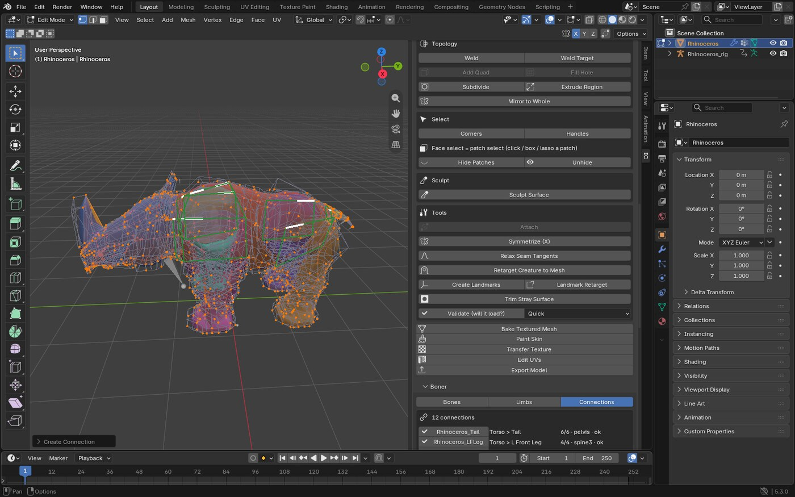

Add Stub Socket: a class the creature does not model
Without arm stubs, for example, a creature can't take arms, and the game's check warns Required limb class not
found. Add Stub Socket adds the stub limb and its connection. Its menu lists only the classes that no
limb and no connection of the creature has. The stock rhinoceros already has its arm stubs, so to follow this example
on it, first delete the connections of its two arm stubs (classes LFArm and RFArm, in the
Connections tab) and then those two limbs (Limbs tab). The pictures show a rhinoceros stripped that way.
- In Edit Mode select the 4 corners of one Torso patch (such as a shoulder for arms, or the back for wings).
- Choose a missing class, for example Add Stub Socket > LFArm. The bone, ring and host bone are set up for you.
- Add the other side too.
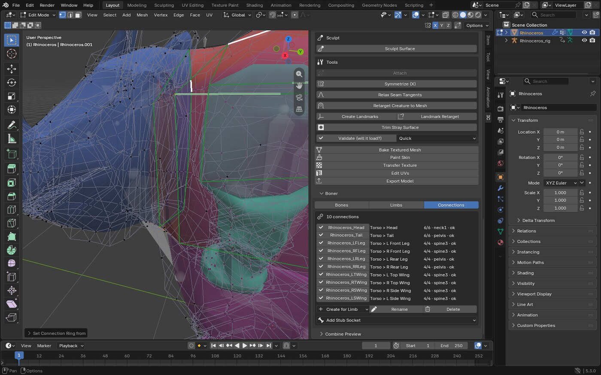

Boner > Bones: renaming, adding, deleting and re-parenting bones
This tab also holds the skinning tools (see Skinning and re-skinning).
- Rename Bone (pencil next to Bone, or Blender's F2). Use a unique name of up to 63 ASCII characters; references and Actions follow. Renaming a bone the game looks up is allowed but warned. To reuse another bone's old name, export and re-import first.
- Add Bone under Active: choose the parent in Bone, then give a name, offset and length. Skin points to it with Assign Selected.
- Adopt Added Bones (import icon) takes in bones made with Blender's tools. Chains and copied bones with children need it; a single new leaf is exported without it.


An added bone always belongs to its parent's limb; re-parent it to move it.
Deleting and re-parenting the creature's own bones
Use X and Ctrl+P in the rig's Edit Mode, or the Outliner.
- Deleting a bone gives its points and children to its parent, and removes it from limbs, IK chains and clips.
- Re-parenting keeps the bone's rest position and its animation.

You can't delete the root, bones the game looks up by name, stub bones, host bones or a limb's only bone. You can't move the root, make a second root, put a bone under a stub, or split a limb other than the Torso.
Joint limits
- Joint limits: each rig bone's
bz_joint_limitsproperty, in radians. Reset to Stock restores it. - Joint limits may have no effect in the game. The creature's IK chains are kept as they are, and are not edited here.
Validate, Combine Preview and the Quick combine tier
Validate (will it load?), with Combine Checks: Quick (default), reports:
- problems that block loading;
STOCK: things every base-game creature has but yours lacks;WARN: advice;COMBINE: trial combinations with stock creatures. ACOMBINE ERRORmeans the combiner fails on your creature.
- To try it, break a creature: tick Mid on LFLeg only, delete the LFArm connection, and remove
nosefrom the Head. - Press Validate (will it load?) and read the lines in an Info editor.
- Open Combine Preview, choose a stock animal as the other creature and press Preview. It stops at the first refusal. Validate Combines runs only the quick combine checks.
Change the class of left and right partners together, and keep the name of the tail1 bone.
The Blueprint panel
The blueprint is the file that tells the game how a model behaves: its name, its kind, its animations, sounds, effects and numbers. This chapter explains the Blueprint panel, which shows and changes the blueprint of a structure, a prop, a worker or a character. (A creature's blueprint is changed through the creature panels. See A new creature from a game animal.) The panel is in the IC Game tab. It appears when a part, the rig or the group empty of the model is selected.
Load the blueprint
- Select the model and press Load Blueprint. The status box then shows what kind of thing it is and lists the changes you have made. Reset reads the file again and throws away your changes.
- If the panel says there is no blueprint file beside the model, start the project from one of the game's things (File > New > Impossible Creatures Project...). That brings its blueprint, with its animations.
Some of the game's blueprints open read-only, with their fields greyed out. The status box says why:
- a blueprint in the game's oldest file layout can be looked at, and Export Entity Folder copies it unchanged;
- a blueprint that holds its model inside itself can be looked at, but not exported.
What the panel shows
| Box | What it is |
|---|---|
| Name | The name the game shows, up to 255 letters. A code like $41545 stands for a text in the game's language files. |
| Kind of thing | Kind and Class number: what the game makes of the model (a building, a worker, scenery, a shot). Changing this changes multiplayer. A number the game gives no behaviour makes a plain prop that only plays animations. |
| Footprint and offset | X and Z: how many path cells a building blocks (buildings only; each cell is 2 game units; 0 and 0 lets the game measure the model). Calc from model puts the measured numbers in. The result can differ by a cell or so from a stock building's own numbers. Offset moves the model over its footprint (Y raises it). Changing these changes multiplayer. |
| Sounds | Sounds the game loads before play starts. Press Add Sound, type the path into the new row, for example DATA:AUDIO\SPECIALFX\STRUCTURES\WOODBIND.PAT, and use a row's X
to remove it. Missing files are skipped silently. (To add a sound of your own for an animation moment, use Effects, events and sounds.) |
| Icon | Frame the model in the 3D view and press Icon from this view: the middle of the view becomes the 64 by 64 picture the blueprint holds. It is written when you export. Remove New Icon (the X) drops it. The button works from the sidebar of a 3D view. |
| Where the game finds it | The folder under Data/art/ebps/. The panel says how it found the folder. If it says “only a guess”, check it. Keep the original thing's folder to replace
the original. |
| Export | The button Export Entity Folder.... |
The part Gameplay numbers shows the numbers the game gives this thing and lets you change them: Gameplay numbers.
Export and install are the same for every kind of thing: Check, export, install, remove and share. The choices of the export window (a new name of your own, or replace the original) are in Structures and props, section “Check, export, install”.
Maps and scenarios
Open a map (.sgb), change its ground, water, textures and placed things, and save it. You can also start
new maps, paint, script and replay cinematics.
Opening a map
- Use File > Import > Impossible Creatures Map from the Game... for the game's maps, or Impossible Creatures Map (.sgb) for a file.
- Four options start on: Placed models, Water, Creatures and Game look. Turn them off for a quicker import.
If the game isn't found, set the Game folder in the add-on's preferences.
What you get
- A collection named after the map, sorted into terrain, water, structures, nature, units and other.
- Terrain: one mesh at real size, with its ground textures.
- Water: a surface wherever water lies above the ground.
- Placed things: models, or named empties where no model can be shown. Each keeps its blueprint, owner and groups.
- Creatures: real models, including combined ones, without animation.
- Game look: sun, sky, ground picture, water, border, decals and fog. It is never saved. Toggle it with Show game look / Remove game look; remove it to see ground textures plainly.
The report
The status bar sums up the import. The text Map import <name> in the Text Editor lists what was placed and why anything is an empty.
The Map panel
In the sidebar's IC Map tab (N), the Map panel shows the map's size, object counts and source, with a folding part for each tool.
Changing the ground and the water
- Ground: sculpt it, or move its points in Edit Mode. Only heights are saved. Don't add, remove, join or rearrange points: the save is refused. Undo or reopen the map.
- Steps: heights are rounded to steps (usually 0.5 m, sometimes 0.4 m) and limited to 0-255 steps. The save report counts changes.
- Water: move the water surface up or down; ponds with their own height stay. Use Add water... if there is none; saving then sets the map's water level. Press Redraw water after moving it, or after sculpting a map larger than 257 x 257 points.
Painting ground textures
In Ground textures, select terrain faces in Edit Mode and press a material's Use on selected faces. Add ground texture... adds one from the game. Each block of 8 x 8 cells takes the texture most of its faces have; a tie changes nothing.
Moving, copying, adding and deleting placed things
- Move (G), turn (R) or delete (X) objects as usual.
- Copy with Shift+D or Alt+D.
- Add object at the 3D cursor... places a game blueprint.
- Use Set owner of the selected... and Drop selected to the ground as needed.
- Scale is ignored.
- Copies of creatures combined inside the map are left out.
Checking and saving
- In Save, Check my changes lists what a save would change.
- Save Map..., or File > Export > Impossible Creatures Map (.sgb), writes the map and its companion files (triggers, dialogue, pictures) to a folder.
- Save ready-to-drop folder... writes
Data/scenarios/mp(orsp) with aREADME.txton installing into a copy of the game. The file name is made lower case and every other character becomes an underscore (My Mapbecomesmy_map).
- Game and Steam folders are refused. So is the original file, unless you tick Replace the original file.
- Read the text Map save <name> for cautions.
The pathfinding
The map stores where units can walk. Choose Pathfinding in the save dialog:
- Update when needed (default): updates where ground or blocking objects changed.
- Rebuild like the game: rebuilds all of it.
- Leave as it is: units walk as on the old ground.
First test in game: can a unit walk across what you changed?
Making a new map
File > New > Impossible Creatures Map asks for a name, ground, size, kind and players. Keep Give each player a start on for a lab and three henchmen each. The game folder is required.
- Map settings changes name, kind and players. Make preview picture makes the map list's pictures.
- Terrain look sets light, sky, sea, water brightness, fog and the fine ground texture. The game ignores the sea colour.
- Press Check map before saving. Map problems lists missing or blocked starts and broken script references; Locate selects one.
Save with Save ready-to-drop folder.... The game lists a multiplayer map only for 2 to 6 players.
Painting the map
- Passability: Paint blocked (red) or Paint open (green), or select faces in Edit Mode and press Block, Open or Clear.
- Overlays: shows where units can go. Press the entry again to refresh. Not saved.
- Terrain types set footstep sounds. Paint them, or set selected points.
- Water levels: select points, then Water at a height... or Dry the selected points.
- Decals: Edit decals (make handles), change the handles, then Redraw decals on the ground. Add decal at the 3D cursor... adds one.
- Blend tiles add soft edges between ground textures.
- Texture stamping: Stamp at the 3D cursor... paints a decal into the ground picture. The game shows stamps only at its highest ground detail.
Scripting the map
- Groups and variables: select objects and press + to make a group.
- Triggers: make a trigger, say who runs it, and add conditions and actions with + (type to search).
- Dialog triggers and AI scripts and armies handle dialogue, computer-player scripts and armies.
- Check the scripts finds references to deleted objects, groups or text.
- Saving writes your changes into the map and its
.trgand.dlgfiles.
Cinematics
In Cinematics, each animation is a collection with an empty per key frame. Move keys and change
their values, then press Preview and drag the timeline. Add animations with New
Camera, New Object or New Move (New Camera Animation on a
map without cinematics). Triggers use the animation's number. Saving writes the .na file. The game's path may bend slightly differently.
Watching a cinematic (Replay)
Replay acts out a cinematic with the map's trigger script.
- Open Cinematics > Replay and press Find the cinematics.
- Pick one, press Build replay, then Look through the camera.
- Press Space in the 3D view.
- Event list marks each event exact, approximate or skipped.
- Clear replay brings back your objects, camera and frame range. A replay never changes the map.
- Import with Placed models on to see labs, characters and props animate. Placed creatures stay still.
- Walking, timing after speech, random countdowns and the camera's first blend are approximate.
- Effects, random wandering and groups filled from your units during play are skipped. Dialogue isn't drawn, and there is no sound.
- Conditions that depend on play are guessed: the trigger that starts the cinematic is taken as true, other conditions on the rest of the game (a key press, a unit dying) as never true, and random countdowns use the middle of their range. You can't change these choices.
- Replays may differ from the game.
Height maps, terrain and entity files, lists and crop
- File > Import and Export handle Height Map (.tga), Terrain (.ter) and Entities (.ent). A same-size terrain replaces ground, sky and sea values; entities are added.
- Object list filters placed things to select, hide or delete. Blueprint list counts how often each blueprint is used.
- Terrain crop: pick a size, place the 3D cursor and press Validate to see what would be lost. Crop! builds a smaller map and hides the old one. Crop anyway overrides problems.